Smartsaver: A Power Tracking, Management and
Automated Control System
A Capstone and Research Project presented to the Faculty of
Technology and Engineering College for Humanity
Dr. Yanga’s Colleges, Inc.
Biñang 2nd, Bocaue, Bulacan
In Partial Fulfillment
of the Requirements for the Degree
Bachelor of Science in Information Technology
by
Amboya, Kenneth E.
Carillo, Bianca B.
Perez, Jhude Christopher L.
Submitted To
HERLIZA F. ESTRADA, MIT
Adviser
November 2026
Approval Sheet
Image of the signed Approval Sheet
Acknowledgment
Image of the signed Acknowledgment
Dedication
To our technical adviser, whose technical direction, patience, and insistence on doing the work properly shaped this system from its earliest concept to its completion;
To our families, whose love, patience, and sacrifices sustained us throughout this journey;
To our research adviser, whose guidance, patience, and scholarly standards kept this study focused and defensible;
To the faculty of the Technology and Engineering College for Humanity, who shared their knowledge and encouraged us to do better;
To our friends and classmates, who offered help and companionship along the way;
and to every future researcher who may build upon this work,
this study is dedicated.
Abstract
Households often learn about wasted electricity only after the monthly bill arrives, when the consumption has already happened. Manual switching depends on memory, and loads can remain active in unoccupied rooms. This study developed and evaluated SmartSaver, a low-cost, local-first IoT system for household power tracking, monitoring, and automated control. The system uses an ESP32 Hub, ESP32-C3 wireless modules over ESP-NOW, a local dashboard, and a one-trigger/one-action rule engine. Implemented parts include a real-time clock, motion, climate, and light sensors, relay switching, and a buzzer.
The study used a descriptive-developmental design with an Iterative Waterfall process. Evaluation involved 26 users (6 household occupants and 20 non-household adults), five IT professional evaluators, functional testing, the Technology Acceptance Model (TAM), the ISO/IEC 25010:2023 instrument, and 20 paired runtime trials. The History Server was designed but not deployed, so server-side savings and analytics were not evaluated.
Twenty-two local functional tests passed; two server-dependent tests were not executed. TAM results indicated strong agreement overall (M = 3.27), with perceived usefulness at 3.29 and perceived ease of use at 3.13. The ISO/IEC 25010 overall mean was 3.59, rated Strongly Agree across all eight characteristics. In the runtime trials, unnecessary ON-time fell from 544.00 s manually to 3.59 s automatically, a 99.34% reduction (t = 55.27, p < .001), corresponding to an estimated 9.01 Wh per 60 W trial.
The system was acceptable, efficient, and suitable within the tested scope. It reduces reliance on memory and demonstrates local-first automation, but it is not a metered energy monitor, its wireless link is unencrypted, and the small sample limits generalization.
Table of Contents
Table of contents — to be generated and edited in the final Word template after pagination
List of Figures
| Figure | Title | Page |
|---|---|---|
| 1.1 | Conceptual framework | ___ |
| 2.1 | Data gathering procedure | ___ |
| 2.2 | Iterative Waterfall Model | ___ |
| 2.3 | DFD Level 0 context diagram | ___ |
| 2.4 | Logical data-flow diagram (Level 1) | ___ |
| 2.5 | Physical architecture diagram | ___ |
| 2.6 | Hub power distribution schematic | ___ |
| 2.7 | Hub sensor and GPIO wiring schematic | ___ |
| 2.8 | Wireless relay extension-type schematic | ___ |
| 2.9 | Wireless motion schematic | ___ |
| 2.10 | Entity relationship diagram | ___ |
| 2.11 | Home page screenshot | ___ |
| 2.12 | Parts page screenshot | ___ |
| 2.13 | Rules page screenshot | ___ |
| 2.14 | Custom-rule wizard screenshot | ___ |
| 2.15 | Config page screenshot | ___ |
| 2.16 | Login screen screenshot | ___ |
| 2.17 | Setup page screenshot | ___ |
| 2.18 | Two-semester project timeline | ___ |
| 2.19 | Verification and validation flow | ___ |
| 2.20 | Serial monitor unit-test evidence | ___ |
| 2.21 | Bench integration setup | ___ |
| 2.22 | Dashboard during system testing | ___ |
| 3.1 | Functional test summary | ___ |
| 3.2 | Non-functional test summary | ___ |
| 3.3 | Runtime comparison | ___ |
| 3.4 | TAM construct means | ___ |
| 3.5 | ISO/IEC 25010 characteristic means | ___ |
List of Tables
| Table | Title | Page |
|---|---|---|
| 2.1 | Distribution of all respondents | ___ |
| 2.2 | Four-point evaluation scale | ___ |
| 2.3 | Functional requirements | ___ |
| 2.4 | Non-functional requirements | ___ |
| 2.5 | Logical data entities and relationships | ___ |
| 2.6 | Hub GPIO assignments | ___ |
| 2.7 | Wireless module GPIO assignments | ___ |
| 2.8 | System data entities and relationships | ___ |
| 2.9 | Process design | ___ |
| 2.10 | Hardware development tools | ___ |
| 2.11 | Bill of materials and prototype cost | ___ |
| 2.12 | Software development tools | ___ |
| 2.13 | Third-year, second-semester schedule | ___ |
| 2.14 | Fourth-year, first-semester schedule | ___ |
| 2.15 | Team responsibilities | ___ |
| 2.16 | Unit testing areas | ___ |
| 2.17 | Test environment and participants | ___ |
| 3.1 | Functional test cases | ___ |
| 3.2 | Non-functional test checks | ___ |
| 3.3 | Runtime and timing results | ___ |
| 3.4 | Profile of user participants | ___ |
| 3.5 | Scale and verbal interpretation | ___ |
| 3.6 | TAM results | ___ |
| 3.7 | TAM item-level rating distribution | ___ |
| 3.8 | ISO/IEC 25010 results | ___ |
| 3.9 | ISO/IEC 25010 item-level rating distribution | ___ |
| 3.10 | Comparison matrix | ___ |
| 4.1 | User acceptance at a glance | ___ |
| 4.2 | Software quality at a glance | ___ |
| 4.3 | Runtime and indirect energy effect at a glance | ___ |
Page numbers will be set in the Word template.
List of Appendices
| Appendix | Title | Page |
|---|---|---|
| A | Respondents Letter | ___ |
| B | Approval Letter | ___ |
| C | Informed Consent Form | ___ |
| D | Endorsement Letter | ___ |
| E | Ethical Clearance | ___ |
| F | Grammarian Certificate | ___ |
| G | ISO/IEC 25010:2023 Evaluation Tool | ___ |
| H | Technology Acceptance Model | ___ |
| I | Data Dictionary | ___ |
| J | Survey Questionnaire | ___ |
| K | Interview Guides | ___ |
| L | Program Output | ___ |
| M | Source Code | ___ |
| N | Gantt Chart | ___ |
| O | User Manual | ___ |
| P | Screenshots | ___ |
| Q | Curriculum Vitae | ___ |
Page numbers will be set in the Word template after pagination.
CHAPTER 1
PROJECT RATIONALE
Introduction
Electricity is one of the few household costs that arrives after the fact. A family receives the monthly bill only after the consumption has already happened, leaving little room to identify what changed, which appliance caused the increase, or how the next bill might be reduced. This delay turns electricity from a manageable expense into a recurring source of uncertainty, particularly for households operating on fixed or limited budgets. The same observation motivated this study: a household should not have to wait for the bill to understand how it is using electricity.
The researchers’ own experience with household electricity monitoring made this limitation concrete. Even when the monthly bill is paid on time, it does not explain which loads were left running, whether a room was occupied, or how much of the consumption was unnecessary. The bill provides a total, not a decision. This project began from that gap between the information households receive and the information they need to act.
Globally, improving household energy efficiency has become a central part of reducing demand and managing costs. The International Energy Agency (2024) emphasizes that efficiency improvements depend not only on more efficient equipment but also on how energy is monitored, managed, and used. Growing interest in smart homes and the Internet of Things has produced new ways to collect consumption data, connect appliances, and automate routine actions. Reviews of smart-home energy management systems show that these technologies can coordinate monitoring, scheduling, and control within a single household or across a wider neighborhood (Etedadi Aliabadi et al., 2021). Prototype systems have also demonstrated that an IoT-based meter can combine consumption measurement with load control (Munoz et al., 2022). These developments establish the technical feasibility of a more responsive household energy system.
In the Philippine context, the problem is more immediate. Electricity is a recurring household expenditure and remains a separate category in the Family Income and Expenditure Survey (Philippine Statistics Authority, 2024). For many families, the monthly bill competes with food, transportation, education, and other essential expenses. The policy environment also reflects the difficulty of keeping electricity affordable: subsidies, lifeline rates, and other pricing mechanisms are continually debated because electricity costs affect household welfare (Francisco & Basilio, 2025). A system that helps a household see and control its consumption therefore has practical value beyond convenience.
The issue is not limited to the size of the bill. Households also struggle with the timing and visibility of consumption. Manual switching depends on memory and presence; appliances may remain on in unoccupied rooms; and standby loads continue to draw power without notice. Conventional electricity monitors provide readings, but they do not necessarily connect those readings to actions (Munoz et al., 2022). A useful household system must close that loop: it must show what is happening, let the user manage it, and apply simple automation when the household is not actively watching.
Research on residential energy feedback offers evidence for this direction. Feedback studies indicate that households can adjust their behavior when consumption information is presented in a form they can understand and act on (Agarwal et al., 2023). However, feedback alone does not guarantee control. The literature and existing systems still leave a gap between awareness and action, especially for ordinary households that need an affordable, understandable, and locally controlled solution (Etedadi Aliabadi et al., 2021; Munoz et al., 2022).
This study addresses that gap by developing SmartSaver, a power tracking, management, and automated control system for general household use. SmartSaver combines real-time monitoring, a local dashboard, manual control of connected loads, and rule-based automation. Its architecture is designed around a Hub and modular wireless parts, allowing sensors and actuators to be added through capability codes rather than through a complete redesign. In its implemented form, the system supports a real-time clock, motion, climate, and light sensing, together with relay-controlled loads and a local buzzer. The wider architecture is intentionally extensible so that additional sensors and actuators can be supported as new capabilities are implemented.
The purpose of this study is to design, develop, and evaluate SmartSaver as a locally controlled household energy system that turns consumption data into practical action. Specifically, the study seeks to integrate tracking, management, and automation in one system; provide an interface that ordinary household users can understand; and determine the system’s functional suitability and user acceptance. The project does not attempt to replace the household’s electricity provider or to perform billing. It focuses on the household’s own visibility and control over the loads connected to the system.
The contribution of the study is both practical and conceptual. Practically, it offers a working household prototype that combines monitoring, management, and automation in a single local environment. Conceptually, it frames household energy control as a progression from information to action: consumption is measured, presented, and then acted upon through manual or automated control. The system’s capability-based architecture also treats extensibility as part of the design, rather than as an afterthought.
The expected benefit is cumulative rather than dramatic. A light left on in an empty room, a fan running after the occupant has left, or a device kept on standby may each represent a small waste; aggregated across rooms, appliances, and days, those small losses become a meaningful household cost. This is the logic of marginal gains: improvement comes from many modest, repeated reductions rather than from a single intervention. The system is designed to make those reductions automatic and repeatable.
This orientation reflects the DYCI core value of Magis. Magis is not satisfied with the minimum. A simple consumption display would satisfy the basic requirement of “tracking,” but SmartSaver aims for more: it connects tracking to management, connects management to automation, and keeps the architecture open so that the same system can grow beyond its initial set of parts. The project is therefore not only a record of what a household consumed; it is an attempt to help the household do more with that information.
Related Literature
Household Energy Use and the Cost Problem
The literature consistently frames household energy use as both an economic and a behavioral issue. The International Energy Agency (2024) reports that efficiency gains depend not only on equipment but also on how energy is monitored, managed, and used. This positions household energy management as more than a matter of replacing appliances; it is also a problem of information and control.
In the Philippines, the economic dimension is especially visible. Electricity is a recurring household expenditure tracked separately in the Family Income and Expenditure Survey (Philippine Statistics Authority, 2024), and affordability remains a policy concern because electricity costs affect household welfare (Francisco & Basilio, 2025). These sources establish why a household-level system that improves visibility and control has practical relevance, particularly for families whose budgets leave little room for avoidable consumption.
Smart Home Energy Management Architectures
Reviews of smart-home energy management systems describe a field organized around monitoring, scheduling, coordination, and control. Etedadi Aliabadi et al. (2021) systematically review coordination approaches for home energy management systems in neighborhood areas, showing that the technical agenda extends beyond individual appliances to how households and local systems share and respond to energy information. This review provides the architectural context for SmartSaver: a household system is one node within a broader energy-management problem.
More recent work demonstrates that a local gateway can perform meaningful management without relying entirely on remote infrastructure. Serepas et al. (2025) designed an ESP32-based gateway for smart homes that supports local control, energy monitoring, and a web dashboard while using lightweight protocols. The authors describe the gateway’s bill of materials as costing only a few dollars and report memory usage low enough for a microcontroller-class device. This is direct evidence that local-first energy management does not require expensive server hardware.
Edge-computing research reaches a similar conclusion from a different direction. Yar et al. (2021) implemented a smart-home system on a resource-constrained Raspberry Pi, keeping sensitive data in a local cloud and processing sensor data at the edge to reduce bandwidth, computation, and storage costs. Although their central device is a single-board computer rather than a microcontroller, the design logic is relevant: local processing can improve privacy and reduce dependence on continuous cloud connectivity.
Low-Cost Hardware and the ESP32 Platform
The ESP32 has become a common platform for low-cost IoT because it integrates Wi-Fi, Bluetooth, processing, and general-purpose input/output in one module. Hercog et al. (2023) present ESP32-based devices as practical vehicles for teaching and implementing IoT applications, with a toolchain and peripheral set that simplify prototyping. Their work supports the choice of the ESP32 family as a development platform, although it is an educational implementation rather than a household energy study.
Cost-focused system work makes the economic argument more directly. Mirza et al. (2026) propose a cost-effective edge-based smart-home architecture using a Raspberry Pi and ESP32, explicitly framing affordability and local processing as design goals. Serepas et al. (2025) likewise treat the ESP32 gateway as a low-cost alternative to single-board computers for always-on local control. Together, these studies show that the building blocks for a low-cost household system are already available; the remaining question is how they are integrated.
ESP32-based energy metering has also been demonstrated. Pawar et al. (2025) review smart energy meter implementations that use an ESP32 with voltage and current sensors, threshold-based load disconnection, and a web or mobile dashboard. Their review shows that measurement, display, and control can coexist on the same microcontroller platform, which is the same integration logic SmartSaver applies to a household hub.
Wireless Communication and Sensor Constraints
A local system is only as useful as its communication link and its sensors. Levush and Luchechko (2026) evaluate ESP-NOW for low-latency indoor IoT systems, reporting that the protocol is suitable for responsive local communication in indoor settings. This supports the use of ESP-NOW for communication between the Hub and wireless parts, where short messages and predictable local response matter more than high-bandwidth connectivity.
Sensor choice introduces a different set of trade-offs. Hassan (2026) benchmarks several Arduino DHT11 libraries on a resource-constrained device and finds differences in flash memory use, SRAM consumption, call duration, timing variability, and reliability. The study is useful precisely because the DHT11 is inexpensive and widely used: low component cost does not remove the need to validate timing, memory, and data quality. For SmartSaver, this reinforces a design principle that the system should not treat a cheap sensor as a transparent source of truth; sensor behavior has to be tested and bounded.
Feedback, Automation, and Load Control
Research on residential energy feedback shows that consumption information can influence household behavior when it is presented in a form people can understand and act on (Agarwal et al., 2023). Feedback is therefore a necessary but insufficient condition for control. A system that only displays data leaves the household to translate that data into action; a system that also supports management and automation can shorten the distance between awareness and behavior.
System-level studies show what that translation can look like. Munoz et al. (2022) designed an IoT smart meter with load control for home energy management, combining consumption measurement with the ability to act on connected loads. Affum et al. (2021) present an IoT-based smart home energy management system for monitoring and controlling household energy use. These implementations demonstrate that measurement and control can be integrated, but they also illustrate the fragmentation of the field: each system makes different assumptions about hardware, connectivity, and the degree of automation.
More advanced control approaches expand the design space but also raise its complexity. Latoń et al. (2024) review deep reinforcement learning for home energy management and describe its use in demand response, load scheduling, and renewable-energy integration. They also identify persistent challenges in data security, scalability, and the gap between theoretical models and practical deployment. This is a useful counterweight to purely optimization-driven designs: an ordinary household system must remain understandable, maintainable, and affordable, not merely algorithmically sophisticated.
Synthesis
Taken together, the literature establishes four points. First, household energy management is a real economic and behavioral problem, not only a technical curiosity (International Energy Agency, 2024; Philippine Statistics Authority, 2024; Francisco & Basilio, 2025). Second, local gateways and edge processing can provide monitoring and control without continuous cloud dependence (Serepas et al., 2025; Yar et al., 2021). Third, the ESP32 platform and inexpensive sensors make a low-cost implementation feasible, provided that communication and sensor limitations are handled carefully (Hercog et al., 2023; Mirza et al., 2026; Levush & Luchechko, 2026; Hassan, 2026). Fourth, feedback and automation are complementary: information supports decisions, while control turns decisions into action (Agarwal et al., 2023; Munoz et al., 2022; Affum et al., 2021).
What the literature does not yet provide is an integrated household system that treats these points as one design problem. Existing work tends to emphasize a single concern—coordination, gateway design, metering, feedback, or optimization—and often assumes a particular hardware or connectivity model. The gap is therefore not the absence of low-cost components or smart-home concepts; it is the absence of a locally controlled, extensible system that combines tracking, management, and automation in a form ordinary households can use and maintain. This is the space SmartSaver addresses.
Related Studies
Several of the studies reviewed in this section are existing systems rather than conceptual proposals. Munoz et al. (2022), Serepas et al. (2025), Mirza et al. (2026), Yar et al. (2021), and Affum et al. (2021) each describe an implemented monitoring or automation system, while Albraheem et al. (2023) and Yeboah et al. (2026) describe existing smart-plug designs. Three commercial systems—Sense, Emporia Vue, and Home Assistant—are also examined to distinguish research prototypes from products available to households.
Monitoring and Control Prototypes
Munoz et al. (2022) developed an IoT smart meter with load control for home energy management. Their study is notable for treating measurement and actuation as one system rather than as separate devices: the meter collects consumption data and the system can act on connected loads. The work demonstrates the basic technical chain SmartSaver also follows—sense, process, display, and control—although its emphasis is on the metering hardware rather than on a long-term household deployment.
Serepas et al. (2025) moved the same logic into an always-on local gateway. Their ESP32-based system monitored energy consumption, executed control commands, and served a web dashboard while keeping memory use low; the reported gateway cost was only a few dollars. The deployment took place in an educational building, which makes it a useful test of local processing but not a direct study of ordinary household behavior. Its significance for this paper is architectural: a low-cost microcontroller can host the local management layer.
Mirza et al. (2026) extended the cost argument by combining a Raspberry Pi and ESP32 in a cost-effective edge-based smart-home architecture. The design treats affordability and local processing as explicit requirements rather than incidental benefits. Because the study is a system proposal and prototype evaluation, its main contribution here is the feasibility of a low-cost edge architecture, not evidence of long-term energy savings in households.
Yar et al. (2021) implemented a smart-home automation system on a resource-constrained Raspberry Pi and used edge processing to keep sensitive data in a local cloud. Their evaluation reported faster motion detection, millisecond-scale relay switching, and lower energy consumption than comparison systems. The study demonstrates the value of local processing for privacy and responsiveness, but its single-board computer is more expensive and more power-hungry than a microcontroller-based hub. It therefore supports the edge-computing rationale while leaving room for a lower-cost ESP32 implementation.
Affum et al. (2021) present an IoT-based smart home energy management system for monitoring and controlling household energy use. Their work follows the familiar architecture of sensor nodes, a central controller, and a user-facing interface, and it shows that household energy management can be implemented with accessible IoT components. The study is primarily a system demonstration; it does not provide a long-term household evaluation or a detailed cost comparison, which limits how far its results can be generalized.
Smart Plugs and Appliance-Level Data
Albraheem et al. (2023) designed an IoT-based smart plug system that collects active-power data through Wi-Fi smart plugs, stores it in the cloud, and presents accumulated consumption through a mobile application. The study compared plug measurements with values from company-labeled devices and reported that the IoT-based readings were accurate. This supports appliance-level monitoring as a practical source of household consumption data, but the design’s reliance on cloud storage and a mobile application also shows how local control can be secondary in some implementations.
Yeboah et al. (2026) developed a smart plug around an ESP-12F microcontroller, ZMPT101B voltage sensing, CT-406 current sensing, and an ADS1115 analog-to-digital converter. The system included a locally hosted or cloud-deployable web platform for real-time monitoring and reported measurement accuracy of 99.48% for voltage and 90.52% for current. The gap between those two figures is instructive: voltage measurement was highly accurate, while current measurement remained more sensitive to calibration and hardware limits. For SmartSaver, this reinforces the need to validate sensor readings instead of assuming that a low-cost module is precise by default.
Occupancy-Driven Automation
Wu and Yang (2026) report a 92-day A-B-A field experiment on a single office floor in Shenzhen. An IoT and edge-computing system controlled lighting and HVAC; during the middle phase, the intelligent algorithms were disabled without informing occupants. The authors report average energy-saving potential of approximately 25.98% for lighting and 19.50% for HVAC when the intelligent system was active. They explicitly caution that the result is proof-of-concept evidence from one floor and one climate context, not a general performance estimate. The study is still valuable because it measures automation against a manual-control baseline in a real building, which is closer to the kind of evidence SmartSaver will need than a purely simulated evaluation.
Feedback and Behavior
Ruokamo et al. (2022) conducted a randomized field experiment in Finland to test whether information nudges reduce residential electricity consumption. Information was delivered through monthly email newsletters and an online energy service platform, with treatments combining saving tips, platform access, and peer comparisons. The results showed high seasonal variation: registered users who received versatile feedback without social-norm comparisons reduced consumption by around 10% during wintertime. The study also notes the challenge of encouraging behavior among less-interested households. Its relevance to SmartSaver is that feedback can work, but the effect depends on delivery, context, and the user’s engagement.
Philippine Household Energy
Palanca-Tan and Pascua (2026) examined household electricity demand in Metro Manila using localized data from 2001 to 2021. Using heat index and cooling degree days as measures of climate variability, they found that a 1°C rise in the heat index was associated with an increase of about 19 kWh in monthly household electricity use, while an additional cooling degree day raised consumption by about 6 kWh. Lower-income households were significantly less responsive, which the authors interpret as limited adaptive capacity. The study is not a test of a management system, but it establishes a Philippine-specific pattern: household electricity demand responds to climate and income, and a system that helps households understand those patterns has a concrete local rationale.
Commercial Existing Systems
Sense is a commercial whole-home energy monitor that presents real-time consumption and appliance-level insights through a mobile and web application (Sense, n.d.). Its emphasis is on disaggregation and energy intelligence: the system helps a household understand what is consuming power, but it is primarily a monitoring and insight product rather than a general-purpose local automation controller. For SmartSaver, Sense represents the high end of consumer energy visibility, where the value lies in analytics rather than in direct control of arbitrary household loads.
Emporia Vue takes a circuit-level approach. Its energy monitor measures consumption at individual circuits, and the wider Emporia platform combines the monitor with smart plugs, scheduling, and load management (Emporia Energy, n.d.). This is closer to SmartSaver’s integration goal because monitoring and control are part of one product ecosystem. The trade-off is ecosystem dependence: the household buys into Emporia’s hardware and application environment, and the depth of control depends on which compatible devices are installed.
Home Assistant is different again. It is an open-source home automation platform that prioritizes local control and privacy, supports a large library of integrations, and provides dashboards, automations, and energy-management features (Home Assistant, n.d.). It is not a dedicated energy monitor and does not ship with the sensing hardware SmartSaver uses; it is a general hub that becomes an energy system only after meters, plugs, or sensors are integrated. Its strength is flexibility; its cost is configuration and maintenance effort, which can be a barrier for ordinary households.
These commercial systems clarify the gap. Sense offers strong analytics but limited direct load control; Emporia offers an integrated ecosystem but within a vendor platform; Home Assistant offers local flexibility but requires technical setup and separate hardware. SmartSaver is positioned between them: a low-cost, local-first system that combines monitoring, management, and rule-based automation on hardware the researchers can assemble and explain.
Synthesis
The studies reviewed here cover three kinds of evidence. First, prototype studies show that low-cost hardware can measure consumption, control loads, and host a local interface (Munoz et al., 2022; Serepas et al., 2025; Mirza et al., 2026). Second, smart-plug studies show that appliance-level data are feasible but that accuracy and cloud dependence vary across designs (Albraheem et al., 2023; Yeboah et al., 2026). Third, field studies show that automation and feedback can produce measurable savings or behavior change, but the effects are context-dependent and often limited to specific populations or buildings (Wu & Yang, 2026; Ruokamo et al., 2022).
The Philippine study adds the local dimension that the international prototypes lack: household electricity demand is sensitive to climate and income, and lower-income households may have less capacity to adapt (Palanca-Tan & Pascua, 2026). Commercial systems add a further caution: integrated monitoring and control already exist, but they are either analytics-focused (Sense, n.d.), tied to a vendor ecosystem (Emporia Energy, n.d.), or dependent on a general-purpose hub that requires configuration (Home Assistant, n.d.). Taken together, the studies and systems support the feasibility of SmartSaver’s components but also expose the gap the project addresses. The reviewed systems tend to be either low-cost prototypes without long-term household evaluation, cloud-dependent monitoring products, commercial ecosystems, or building-scale automation studies. Few combine local monitoring, manual management, and rule-based automation in one extensible household system, and fewer still evaluate that combination with ordinary household users. This is the empirical space the present study intends to fill.
Statement of the Problem
Households continue to face persistent energy waste due to the absence of an integrated, non-invasive system capable of tracking, monitoring, and controlling power consumption at the room level. Current practice relies on the occupants remembering to switch appliances off, resulting in extended periods where devices remain active in unoccupied spaces with no automatic mechanism to detect or resolve the waste. While energy control solutions exist, they are either too invasive for a typical home or too limited in scope to constitute a complete management system.
This study aims to design, develop, and evaluate an IoT-based power tracking, monitoring, and control system that improves the overall efficiency of a home’s power usage.
General Problem
How can an IoT-based power tracking, monitoring, and control system be designed, developed, and evaluated to improve the overall efficiency of a home’s power usage?
Specific Problems
- How can an IoT-based power tracking, monitoring, and control system be developed to improve a home’s power usage efficiency through wireless, room-level detection of active appliances in unoccupied spaces and automated control of those appliances through user-defined rules, without permanent modification to the home’s electrical installation?
- How can the system be designed and implemented so that household occupants can configure and operate it safely, and so that control of the home’s appliances is protected from unauthorized access?
- How can the system provide efficient and user-friendly processes for power tracking, management, and control, including rule configuration, device pairing and identification, manual override of automation, live device-state monitoring, and local management processes?
- What is the level of user acceptance of the developed system in terms of Perceived Ease of Use (PEOU) and Perceived Usefulness (PU)?
- Is there a significant relationship between Perceived Ease of Use (PEOU) and Perceived Usefulness (PU) in influencing users’ acceptance of the system?
- How does the system perform based on the ISO/IEC 25010:2023 software quality model in terms of Functional Suitability, Performance Efficiency, Compatibility, Interaction Capability, Reliability, Security, Maintainability, and Flexibility?
- Based on the evaluation results, is the developed power tracking, monitoring, and control system acceptable, efficient, and suitable for installation in a household?
Objectives of the Study
General Objective
This study aims to design, develop, and evaluate an IoT-based power tracking, monitoring, and control system that improves the overall efficiency of a home’s power usage.
Specific Objectives
- To develop an IoT-based power tracking, monitoring, and control system capable of improving a home’s power usage efficiency through a wireless hub-and-module architecture that discovers candidate modules, supports human-approved pairing, supervises modular sensing and switching nodes, evaluates user-defined automation rules against live sensor and schedule data, and executes appliance control without permanent modification of the home’s electrical installation.
- To design and implement safeguards that protect configuration and control of the home’s appliances through a password-protected interface and an authenticated link between the hub and its history server.
- To develop an efficient and user-friendly system that supports the key home management processes of automated rule configuration, per-device pairing and identification, manual override of automation, live device-state monitoring, and local management processes.
- To determine the level of user acceptance of the developed system in terms of Perceived Ease of Use (PEOU) and Perceived Usefulness (PU).
- To determine if there is a significant relationship between Perceived Ease of Use (PEOU) and Perceived Usefulness (PU) in influencing users’ acceptance of the system.
- To evaluate the system based on the ISO/IEC 25010:2023 software quality model in terms of Functional Suitability, Performance Efficiency, Compatibility, Interaction Capability, Reliability, Security, Maintainability, and Flexibility.
- To determine the overall acceptability, efficiency, and suitability of the developed power tracking, monitoring, and control system based on the evaluation results.
Scope and Delimitation
Scope
This study covers the design, development, and evaluation of SmartSaver, an IoT-based power tracking, monitoring, and control system intended for general household use. Its scope is defined by the following modules:
User Management Module. The system follows a single-user ownership model. The household occupant sets the dashboard credentials during setup and is the only user of the Hub dashboard. No multiple roles, separate accounts, or per-user permissions are implemented; responsibility for configuration and control rests with the occupant.
Authentication Module. The module verifies the dashboard credentials entered during setup, issues the short-lived session token used by the dashboard’s HTTP API and WebSocket, and authenticates the Hub to the History Server through a shared API key. These controls protect the household’s own interface and server link rather than a multi-user organisational environment.
IoT Home Tracking Module. This module is the sensing foundation. It monitors room-level occupancy through a wired motion sensor and paired wireless motion modules built around the RCWL-0516 microwave sensor, reads temperature, humidity, and ambient light through wired sensors attached to the Hub, and receives state reports from remote Wireless Modules that switch connected loads.
IoT Home Monitoring Module. This module builds on the tracking layer by continuously collecting and evaluating sensor readings and actuator state reports from the Hub’s wired parts and from paired Wireless Modules over ESP-NOW. The design forwards readings, appliance transitions, and topology changes to the History Server when one is available; the server is not deployed in this version, so forwarding and durable storage are designed capabilities rather than evaluated operations.
Automated Control Module. This module executes appliance control when a user-defined rule’s trigger condition is met. Triggers may be based on time, a wired or wireless sensor threshold, or an appliance’s reported state; actions may switch a relay, sound the buzzer, or command a remote module. Overlapping rules are resolved by a defined priority order so that one command is issued per target, and an automated action can be overridden manually for a bounded period.
Reporting Module (designed, not deployed). The module is designed to present estimated savings in hours, kilowatt-hours, and currency, with a per-appliance breakdown and a payback-progress figure derived from the owner’s declared hardware and hosting cost. Because the History Server is not deployed in this version, savings reporting is a planned capability and is not evaluated as an operational output of the study.
Analytics Module (designed, not deployed). The module is designed to visualize historical energy use and system health, including summary and per-appliance savings for selectable periods, daily savings trends, sensor readings over time, and reliability indicators for Hub uptime, sensor staleness, and wireless module presence. A separate advisory panel is planned to surface potential savings from sensor context without mixing that estimate into reported actual savings. The current study evaluates the local dashboard and control functions, not the server-side analytics.
Delimitation
The study does not include advanced functionalities such as AI-based predictive analytics or automated decision-making beyond rule-based automation logic. The system is limited to the core functions identified in the scope: room-level occupancy and environmental sensing, appliance state monitoring, rule-based automated control, manual override, and local configuration management. Estimated energy savings, when the History Server is deployed, would be computed from appliance operating hours and user-declared baselines rather than from measured electrical consumption; the system does not perform true power metering and does not claim revenue-grade accuracy, and savings are not an evaluated output of this study.
The system does not support integration with external platforms such as utility provider APIs, smart-meter systems, or third-party home-automation platforms. It operates as a standalone IoT-based energy monitoring and control system designed for the internal use of a single household.
System development, testing, and evaluation will involve the household occupants as respondents, together with individuals who are not members of the household for the usability portion of the evaluation. Results will be limited to the specific rooms and appliances covered by the test deployment.
The study involves IoT hardware components including ESP32 and ESP32-C3 microcontrollers, a digital real-time clock, a wired microwave motion sensor, wireless RCWL-0516 motion modules paired over ESP-NOW, a temperature and humidity sensor, an LM393 photoresistor comparator module for light sensing, an active buzzer, and relay modules. It does not include the development of custom-manufactured hardware or specialised industrial-grade electrical devices. All components are commercially available off-the-shelf modules. Electrical work is limited to low-voltage direct-current breadboard and prototype assemblies; the only mains connection is the enclosed 12 V, 5 A supply plugged into a wall outlet, and the system does not perform permanent mains wiring, does not measure mains current, and does not claim calibrated electrical measurement in this version.
The system implements basic to intermediate security mechanisms: a password-protected dashboard session for the Hub’s own interface and a shared-secret API key that authenticates the Hub to the History Server. Wireless module traffic is currently unencrypted because the current ESP-NOW build relies on broadcast discovery frames and does not implement link encryption; the pre-shared and local master keys remain defined but disabled, and this is recorded as a limitation. Advanced security features such as multi-factor authentication, biometric verification, per-user accounts on the History Server, and transport-layer encryption between the Hub and the server are not included in the current version. Hub-to-server traffic is plain HTTP, so the deployment guidance restricts the shared key to a trusted network and records transport encryption as a planned enhancement.
The History Server is part of the system design but is not deployed in this version. Savings reporting, historical analytics, payback progress, and the server-side health indicators are therefore planned capabilities rather than evaluated outputs. The local Hub dashboard, rules, and device control remain the operational scope of this study.
The system is intended primarily for domestic use, with academic evaluation of the prototype.
Significance of the Study
This study contributes to a practical household problem: the gap between knowing that electricity is being wasted and being able to identify and stop that waste. Its significance is discussed in terms of the groups most directly affected, from the household occupant to the wider IT community.
Household occupants. The primary beneficiaries are the occupants of the household that uses SmartSaver. The system gives them a local view of which parts are active, lets them switch loads manually, and applies rules when a room is empty or a selected condition is met. It reduces reliance on memory without requiring permanent electrical work. The runtime reduction shown in this study, while estimated rather than metered, indicates that the system can remove unnecessary operation that a household would otherwise pay for.
The researchers. The project gave the researchers direct experience in embedded firmware, ESP-NOW communication, local web development, rule-engine design, hardware assembly, and structured evaluation. It also required them to document a system, test it, and defend the design choices rather than only build a working prototype. Those skills are transferable to future software and hardware work.
Future researchers and IT students. The study provides a documented baseline for a low-cost, local-first IoT system: the architecture, the capability model, the one-trigger/one-action rule engine, the pairing workflow, and the evaluation instruments are all described. Future researchers can reuse the design, extend the capability set, or evaluate the same architecture in a different domain. The limitations are recorded rather than hidden, so the next study can begin from a known boundary.
The technical adviser and faculty. The completed prototype and paper serve as a teaching reference for embedded systems, IoT, human–computer interaction, and capstone research. The project shows how a hardware–software system can be scoped, tested, and evaluated within an academic timeline, including the compromises that come with a small sample and an undeployed reporting server.
The IT community. The design is a reference for low-cost, local-first automation: commodity microcontrollers, a local dashboard, a rule engine that remains inspectable, and a capability model that can be extended. It does not claim to replace commercial energy monitors or a deployed analytics service, but it shows what can be built without a cloud dependency and at a household scale.
Theoretical Framework
This study is anchored on Bounded Rationality as the explanation of the household problem and the Technology Acceptance Model as the explanation of user acceptance. Cognitive Load Theory is used as a supporting lens to explain why the interface and automation must reduce mental effort rather than add to it.
Bounded Rationality
Bounded rationality starts from the observation that people do not make fully rational decisions in the economic sense. Simon (1955) argued that human decision-making is constrained by limited information, limited attention, and limited computational capacity. People therefore satisfice: they choose an option that is good enough for the situation rather than searching for the optimal one. In a household, this shows up as habit and routine. Occupants do not continuously compare the cost of every appliance against its benefit; they rely on memory, convenience, and whatever information happens to be available.
This is the condition SmartSaver addresses. The household receives a monthly bill after consumption has already occurred, and the occupant cannot attend to every load in every room. Remembering to switch off a light or fan is a small decision repeated many times, and bounded rationality predicts that some of those decisions will be missed. The result is not necessarily careless behavior; it is the normal consequence of limited attention. Automation and room-level sensing can act as an external rule that does not depend on the occupant remembering in the moment.
Recent energy research applies the same premise to demand response. Marín Radoszynski and Pinson (2021) model heterogeneous agents as bounded-rational rather than perfectly rational, and show that this assumption changes the dynamics of coordinated electricity demand. Their work supports the position that household energy behavior cannot be modelled as a simple optimization problem. For this study, the implication is design-oriented: SmartSaver should reduce the number of decisions the household must make, not simply present more data and expect the occupant to optimize.
Cognitive Load Theory as a Supporting Lens
Cognitive Load Theory explains why added information can become a burden. Sweller (1988) proposed that working memory is limited and that problem-solving tasks impose a load that can interfere with learning and performance. In an interface, extraneous load comes from unnecessary controls, unclear labels, dense layouts, and the need to remember where information is located. When that load is high, users do not necessarily make better decisions; they disengage or make mistakes.
Smart home research shows this risk in practice. Zhou et al. (2023) found that complex smart-home interfaces increased cognitive load, especially for older users, and proposed clearer visual hierarchy, combined icons and text, reduced content density, and explicit device-state indicators. Their findings are consistent with the design direction of SmartSaver’s dashboard: the household should be able to see what is on, what is off, and what rule is active without reconstructing that information from memory.
Cognitive load is not treated here as a separate theory of the study. It is a supporting mechanism that explains how bounded rationality appears at the interface. Automation reduces the load of remembering; the dashboard must reduce the load of operating and checking the system. The two ideas reinforce each other: the system should do more routine work so that the occupant has to hold less in mind.
Technology Acceptance Model
The Technology Acceptance Model explains why users adopt or reject a system. Davis (1989) identified two central beliefs: perceived usefulness (PU), the degree to which a person believes the system improves performance, and perceived ease of use (PEOU), the degree to which the person believes the system is free of effort. These beliefs shape attitude and intention to use, and they have been applied widely to household technologies.
Smart-home research supports the model’s relevance. Ferreira et al. (2023) examined consumers’ intention to use and recommend smart-home technologies and found that acceptance is shaped by the technology’s perceived value and the user’s context, including environmental awareness. Their study reinforces the point that a technically functional system is not automatically accepted; the household must see it as useful and usable.
TAM is directly connected to the study’s evaluation. Specific Problems 4 and 5 ask for the level of acceptance in terms of PEOU and PU, and for the relationship between the two constructs. The framework guides the descriptive analysis of those constructs; it does not make the PEOU–PU relationship the study’s primary hypothesis.
Integration of the Framework
The three theories describe one chain. Bounded rationality explains why the household problem exists: attention is limited, and manual control depends on memory. Cognitive load explains why a complicated interface would reproduce the same problem inside the system: if the dashboard demands too much attention, the household will not use it consistently. TAM explains why the system must be both useful and easy to use if it is to be accepted at all.
The framework therefore yields three design expectations:
- Automation should remove routine decisions from the occupant rather than require more monitoring.
- The interface should expose state, rules, and overrides with low extraneous load.
- Acceptance should depend on perceived usefulness and perceived ease of use, with the two beliefs related to each other.
The study does not measure cognitive load as a separate variable or test bounded rationality directly. Those theories frame the problem and the design; TAM supplies the measured acceptance constructs, while ISO/IEC 25010:2023 supplies the quality evaluation. This separation keeps the framework explanatory without overclaiming what the instruments actually test.
Conceptual Framework
This study uses an Input–Process–Output–Feedback (IPO-F) framework. The model treats SmartSaver as a household system that converts sensed conditions and user-defined rules into control actions, then uses the resulting state and history to inform the next cycle of decisions.
Input
The inputs are the conditions and instructions the system needs before it can act. These include room-level occupancy from the wired and wireless motion sensors, temperature and humidity from the climate sensor, ambient light from the photoresistor, the real-time clock, and the reported state of connected appliances. The household also supplies the automation rules, device names, power ratings, baseline behavior, tariff rate, and manual commands through the dashboard.
These inputs are not neutral data. They represent the household’s intent: which appliance should respond, under what condition, and for how long. The quality of the output therefore depends on both sensor accuracy and the clarity of the user’s configuration.
Process
The process layer performs four connected functions. First, it tracks sensor readings and actuator states, including the last-seen time of each wireless module. Second, it monitors those readings against the rules and against expected device behavior. Third, it decides which rule applies; when multiple rules overlap, the defined priority order resolves the conflict so that one command is issued per target. Fourth, it acts by switching a relay, sounding the buzzer, or sending a command to a wireless module. Each action and state transition is logged for reporting.
The process is deliberately rule-based. It does not infer intent or predict consumption; it evaluates explicit conditions against live data. This keeps the behavior inspectable: the household can see why an appliance switched, and the researchers can test the same condition repeatedly.
Output
The outputs are the observable results of the process: appliance control actions, live device states on the dashboard, and the local device and rule status. Savings reports and the advisory “could have saved” estimate are designed outputs that depend on the History Server; because the server is not deployed in this version, they are treated as planned outputs rather than observed results. At the evaluation level, the outputs also include the measured PEOU and PU scores and the ISO/IEC 25010:2023 quality ratings.
The framework distinguishes two kinds of output. Operational output is what the system does in the home: switches and states. Evaluation output is what the study measures: acceptance, quality, and overall suitability. Keeping them separate prevents the study from treating a working prototype as automatically acceptable or high-quality, and it prevents planned savings reporting from being presented as an observed result.
Feedback
Feedback closes the loop. When the History Server is deployed, historical reports will show the household which appliances account for the most runtime and where the estimated savings come from; the household can then adjust rules, baselines, or device assignments. Manual overrides provide immediate feedback to the system, and the resulting state is recorded for later review. Sensor readings also feed back into the rule evaluation, so the system responds to changes in occupancy and ambient conditions rather than to a fixed schedule alone.
This feedback loop reflects the theoretical framing. Bounded rationality predicts that the household will not continuously optimize, so the system carries routine decisions; cognitive load theory predicts that the interface must present the results without adding unnecessary effort; and TAM predicts that the household will continue using the system only if it is both useful and easy to use (Simon, 1955; Sweller, 1988; Davis, 1989).
Variables and Relationships
The independent variables are the implemented system and its interface: the tracking, monitoring, and control functions, the rule configuration, and the dashboard design. The dependent variables are the system’s operational efficiency, observed through unnecessary runtime and control behavior; user acceptance, measured through PEOU and PU; and software quality, measured through the ISO/IEC 25010:2023 characteristics. Savings reporting is not treated as a dependent variable because the History Server is not deployed in this version.
Household context acts as a moderating condition rather than a controlled variable. Occupancy patterns, appliance mix, room layout, and user experience can change how much unnecessary runtime the system avoids and how easily it is used. The study does not manipulate these conditions; it evaluates the system within the actual test deployment and reports the results in context.
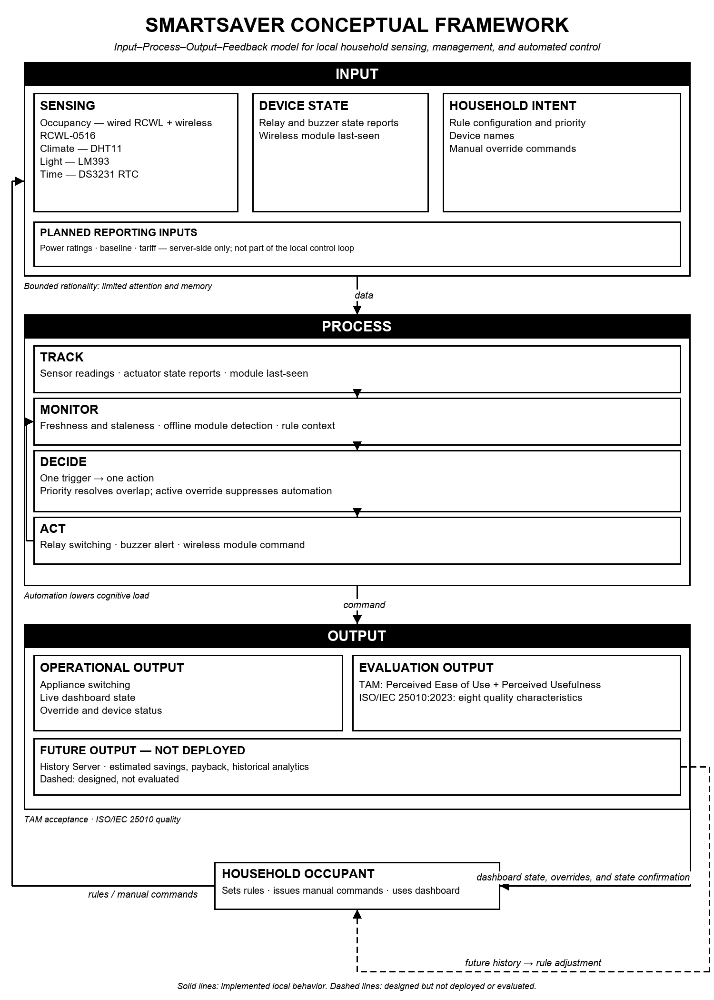
Hypothesis of the Study
The study tests whether SmartSaver reduces unnecessary appliance runtime, thereby indirectly reducing energy waste. The primary outcome is runtime, not metered electricity consumption.
Null Hypothesis (H0). SmartSaver does not significantly reduce unnecessary appliance runtime compared with the existing manual monitoring approach.
Alternative Hypothesis (H1). SmartSaver significantly reduces unnecessary appliance runtime by automating appliance control according to user-defined rules evaluated against live sensor data, time of day, and the reported state of the appliances, thereby indirectly reducing energy waste.
For this study, unnecessary runtime is operationalized as actuator ON-time under unoccupied or unneeded conditions. The comparison condition is the household’s manual monitoring practice. Indirect energy saving is estimated from the avoided runtime and the appliance’s declared wattage; it is not a metered kilowatt-hour measurement.
A secondary operational indicator is response time, defined as the interval between a satisfied trigger and the resulting actuator command or state confirmation. The hypothesis was evaluated using logged runtime and timing evidence. Because the study does not install a separate manual-control group, the comparison is operational rather than a controlled experiment; the results are interpreted with that limitation rather than as a general causal estimate.
Definition of Terms
Conceptual Definitions
Actuator. A device that converts an electrical control signal into a physical action, such as switching a load, sounding an alert, or moving a mechanism; in IoT systems, the actuator is the output side of the sensing-and-control loop (Hercog et al., 2023).
Automation rule. A condition–action statement that tells a system what to do when a specified condition is true.
Capability. A defined description of what a part can sense or do, independent of the specific physical module that provides it.
Dashboard. A browser-based interface that presents system state and control functions in one place.
Energy waste. Energy consumed without delivering a useful service, such as a load running in an unoccupied room or remaining on after its need has passed.
ESP-NOW. A connectionless, peer-to-peer Wi-Fi communication protocol provided by Espressif for low-overhead device-to-device messaging (Espressif Systems, n.d.).
History Server. An optional reporting service that receives system events and computes historical summaries and estimated savings.
Hub. The central controller in a hub-and-module system; it coordinates devices, stores configuration, and provides the user interface.
Indirect energy saving. An estimate of avoided energy derived from avoided operating time and a declared power rating, rather than from a metered electrical measurement.
Local-first. A design approach in which core data and control remain on the local device or local network, with remote services treated as optional (Serepas et al., 2025).
Manual override. A user command that temporarily replaces the automation output for a selected actuator.
Pairing. The process of adding a wireless module to the Hub and assigning it a unique identity.
Perceived Ease of Use (PEOU). The degree to which a person believes that using a system will be free of effort (Davis, 1989).
Perceived Usefulness (PU). The degree to which a person believes that using a system will improve their performance or help them accomplish a task (Davis, 1989).
Sensor. A device that detects a physical condition or state and converts it into a signal that a controller can read (Hercog et al., 2023).
Unnecessary runtime. Actuator ON-time that occurs when the load is not needed, such as after a room has been vacated.
Wireless module. A remote node that provides one sensing or switching capability and communicates with the Hub without a physical data cable.
Operational Definitions
Actuator. In SmartSaver, an actuator is a relay channel or the local buzzer. The relay switches a low-voltage test load, the buzzer produces an audible alert, and a wireless actuator reports its resulting state back to the Hub.
Automation rule. In this study, a rule contains exactly one trigger and one action. Overlapping rules are resolved by a fixed priority order, and the rule can be enabled or disabled.
Capability. In SmartSaver, a capability is the coded part type that maps a device to its sensing or switching behavior. A catalog-only part may be visible but is not treated as working hardware until its capability is implemented.
Dashboard. The SmartSaver dashboard has four main pages—Home, Parts, Rules, and Config—plus the login and setup states. It is served by the Hub and used on a phone or desktop browser.
Energy waste. In this study, energy waste is not measured directly. It is represented by unnecessary actuator runtime and reported through the indirect estimate described below.
ESP-NOW. SmartSaver uses ESP-NOW for Hub-to-module messages. Discovery uses a channel-hop sequence, pairing is approved by the occupant, and the current build does not encrypt the wireless link.
History Server. The History Server is part of the system design but is not deployed in this version. It is not part of the evaluated local control path, and its savings and payback outputs are planned rather than observed.
Hub. The Hub is the ESP32 controller that owns the parts registry, rules, paired-device records, session state, and local dashboard.
Indirect energy saving. In this study, the estimate is:
Estimated energy saved (kWh) = avoided ON-time (hours) × declared wattage (W) / 1000It is not a metered kilowatt-hour reading and is not used as a utility-bill calculation.
Local-first. Local-first means the Hub continues to monitor, evaluate rules, and control loads without the History Server. The server is an optional reporting layer.
Manual override. A manual override in SmartSaver suppresses automation for one actuator for a bounded period; clearing it returns the actuator to rule control.
Pairing. Pairing in SmartSaver means opening the Hub’s pairing window, selecting a candidate module, and assigning a unique lowercase mod_id.
Perceived Ease of Use (PEOU). PEOU is measured by the eight ease-of-use items in Part II of the TAM questionnaire, rated on a four-point agreement scale.
Perceived Usefulness (PU). PU is measured by the eight usefulness items in Part II of the TAM questionnaire, rated on a four-point agreement scale.
Sensor. In the implemented build, the sensors are the real-time clock, the wired and wireless RCWL-0516 motion sensors, the DHT11 climate sensor, and the LM393 light module.
Unnecessary runtime. In the runtime test, unnecessary runtime is the interval between room vacancy and the actuator switching off. The manual condition uses the time until the occupant remembered; the automatic condition uses the relay-off event.
Wireless module. A SmartSaver wireless module is an ESP32-C3 board flashed with one capability—motion or relay—and paired to the Hub over ESP-NOW.
CHAPTER 2
SYSTEM DEVELOPMENT AND METHODOLOGY
Research Design
This study used a descriptive-developmental research design with a quantitative evaluation component. The developmental component produced the SmartSaver prototype; the descriptive component documented its behavior and the users’ assessment of it; the quantitative component tested the runtime hypothesis and summarized the TAM acceptance data and ISO/IEC 25010:2023 expert ratings.
Developmental Component
The developmental component followed a structured cycle: requirements analysis, system design, implementation, testing, and evaluation. The requirements were drawn from the household problem and the statement of the problem; the design translated those requirements into the Hub, the wireless modules, the rule engine, and the dashboard; the implementation produced the working prototype; and the testing and evaluation phases checked whether the prototype behaved as intended.
This component is developmental rather than experimental because the researchers built the artifact under study. The goal was not to compare two treatments but to produce a working system and determine whether it met its specified functions and quality criteria.
Descriptive Component
The descriptive component documented what the system does and how users responded to it. It covered the implemented functions, the supported parts, the pairing and rule workflows, the device states, and the conditions under which the system was tested. It also recorded the profile of the participants and the settings in which the system was used.
The descriptive component is important because the study is a capstone project, not a laboratory experiment. The system was evaluated in a real household and in a non-household adult usability session, and the conditions of those settings are part of the evidence. Describing them prevents the results from being read as if they came from a controlled comparison.
Quantitative Component
The quantitative component used the Technology Acceptance Questionnaire, the local runtime comparison, and the ISO/IEC 25010:2023 expert form. The TAM data were summarized as mean PEOU and PU scores and examined for the descriptive PEOU–PU association; they were not used for the primary hypothesis. The ISO data were summarized by characteristic and overall rating across the five IT professional evaluators.
The design is cross-sectional: each participant or evaluator completed the instrument once, after using or inspecting the system. It is not longitudinal, and it does not include a control group. The quantitative results therefore describe the system at the point of evaluation rather than changes over time or differences between alternative systems.
Why the Design Fits
The design fits the study’s three demands. The developmental demand is met by building and testing the prototype. The descriptive demand is met by documenting the implemented system and its evaluation context. The quantitative demand is met by measuring acceptance and quality with structured instruments.
The design also supports triangulation. User acceptance, expert quality ratings, and functional testing are different forms of evidence, and agreement or disagreement among them is more informative than any one source alone. A high acceptance score cannot compensate for a failed function, and a strong functional test cannot establish that users find the system usable.
The study is not experimental because it does not manipulate an independent variable under controlled conditions. It is not purely qualitative because the main evaluation data are structured ratings. It is best described as a descriptive-developmental study with a quantitative evaluation strand.
Research Subjects
The user evaluation involved 26 participants in two groups. The first group was composed of six household occupants from the researchers’ residential neighborhood in Bocaue, Bulacan. These participants were the actual occupants of the homes where the prototype was tested, so they knew the rooms, appliances, and daily routines that the system was intended to support. Their involvement allowed the system to be evaluated in a natural household setting rather than in a controlled laboratory alone.
The second group was composed of 20 non-household adults recruited from outside the household. They evaluated the same prototype through a hands-on demonstration and guided use. They represented users who had no prior familiarity with the researchers’ homes but who could still assess the dashboard, the pairing and control flow, and the clarity of the system’s feedback.
The household group was selected through purposive sampling because the participants had to be actual occupants of the test homes. The non-household group used convenience sampling because the adults were selected from those available at the testing location during the scheduled period. Both approaches are appropriate when the study needs participants who meet a specific role or are accessible within the testing window (Etikan et al., 2016).
The inclusion criteria were: participants were at least 18 years old; they could read and follow simple on-screen instructions; they had basic experience using a web browser or smartphone; and they were not members of the research team. Household participants additionally had to reside in or regularly occupy one of the test homes. Non-household participants had to be adults outside the test household. Individuals who were below 18, unable to use a browser with minimal assistance, or already familiar with the expected results of the study were not included.
Both groups completed the Technology Acceptance Questionnaire after using the system. The household participants evaluated the system in the context of their own rooms and appliances, while the non-household participants evaluated it after the demonstration and guided tasks. The 20 non-household adults also provided the usability feedback that complemented the household evaluation.
In addition to the 26 user participants, five IT professionals working in the industry served as the expert evaluators for the ISO/IEC 25010:2023 instrument. They were selected through purposive sampling for their relevant professional experience in software development, embedded systems, IoT, or systems evaluation. They were not included in the count of the 26 user participants, and they evaluated the system separately through inspection, demonstration, and documentation.
Table 2.1. Distribution of All Respondents
| Respondent group | Role in the study | Number | Share |
|---|---|---|---|
| Household occupants | Actual occupants of the test homes; completed the TAM and usability tasks | 6 | 19.4% |
| Non-household adults | Adults outside the test household; completed the TAM and usability tasks | 20 | 64.5% |
| User participants | Household and non-household users combined | 26 | 83.9% |
| IT professionals | Expert evaluators for the ISO/IEC 25010:2023 instrument | 5 | 16.1% |
| Total respondents | All participants in the study | 31 | 100.0% |
The 26 user participants and the five IT professionals are separate panels. The IT evaluators did not complete the TAM, and the household and non-household users did not complete the ISO/IEC 25010 form.
The household testing was conducted in the researchers’ residential neighborhood because it provided a realistic setting for room-level sensing, appliance control, and daily routines. The non-household adult testing was conducted in a neutral community setting outside the household because it provided an accessible group of adults who could evaluate the interface and control flow within a single session. The two settings were used for different purposes: the home setting tested the system in everyday use, while the non-household setting tested whether new users could understand and operate it.
The user sample of 26 is adequate for descriptive analysis and for a two-predictor regression, but it is not a large probability sample. The five expert evaluators provide a separate professional assessment of software quality rather than an additional user sample. The results are therefore interpreted as evidence from the study’s test deployment, not as estimates for the general population of Filipino households.
Research Instruments
The study used two instruments: a Technology Acceptance Questionnaire and a full ISO/IEC 25010:2023 expert evaluation instrument. The 15-step SmartSaver user guide structured the hands-on session, but it was a testing procedure rather than a separate scored instrument. The actual questionnaire items are not reproduced in this section; they are provided in the appendices.
Table 2.2. Four-Point Evaluation Scale
| Numerical value | Verbal interpretation | General meaning |
|---|---|---|
| 4 | Strongly Agree | The statement is fully true for the system. |
| 3 | Agree | The statement is true for the system. |
| 2 | Disagree | The statement is not true for the system. |
| 1 | Strongly Disagree | The statement is strongly untrue for the system. |
The same four-point scale is used for both the TAM and ISO/IEC 25010 instruments, with no neutral midpoint. The scale is repeated with mean ranges in 3.3.
Technology Acceptance Questionnaire
The Technology Acceptance Questionnaire was adapted from the Technology Acceptance Model (Davis, 1989) and contextualized to SmartSaver’s dashboard, automation rules, and device-control tasks. It used a four-point Likert scale, from 1 (Strongly Disagree) to 4 (Strongly Agree), and was divided into three parts.
Part I contained seven feature-prioritization items, asking participants how important each function was for managing household electricity. Part II contained seven Perceived Usefulness items and eight Perceived Ease of Use items. Part III contained four attitude-toward-use and intention-to-use items. The Part III acceptance score was summarized descriptively; it was not used as a hypothesis in this study.
The instrument included a current-build note: three savings-related items describe a planned capability rather than a fully deployed History Server. Responses to those items are therefore interpreted as expectations about the planned reporting function, not as evidence of observed savings.
ISO/IEC 25010:2023 Evaluation Instrument
The quality evaluation instrument was the full 36-statement expert form plus one overall rating, based on the eight product-quality characteristics of ISO/IEC 25010:2023: functional suitability, performance efficiency, compatibility, interaction capability, reliability, security, maintainability, and flexibility (International Organization for Standardization, 2023). It used the same four-point scale: 1 (Strongly Disagree), 2 (Disagree), 3 (Agree), and 4 (Strongly Agree), with no neutral midpoint.
The 2023 terminology replaces the older “usability” and “portability” top-level labels with interaction capability and flexibility. Interaction capability covers learnability, operability, user error protection, interface aesthetics, and accessibility; flexibility covers adaptability, scalability, installability, and replaceability. Safety is part of the 2023 model but is excluded from this study’s scope.
The instrument was administered to five IT professionals working in the industry, not to the 26 user participants. The evaluators recorded their position, area of expertise, years of experience, and the nature of their evaluation, such as source-code review, hardware inspection, dashboard operation, demonstration observation, or documentation review.
The full form includes statements about the History Server’s savings computation, health indicators, and server-dependent reporting. Because the History Server is not deployed in this version, those statements were judged from the documented design and the researchers’ demonstration rather than from a live server. The expert ratings on those items therefore describe the designed capability, not observed production behavior.
Administration
The TAM questionnaire was administered after each user participant used the system. Household participants answered it in their own homes; non-household participants answered it after the guided session. The ISO/IEC 25010 form was administered separately to the five IT professionals after their inspection and demonstration.
The 15-step user guide was used to keep the hands-on sessions consistent. It covered signing in, reading the dashboard, pairing modules, toggling parts, testing overrides, creating rules, and reviewing configuration. No separate usability observation checklist was scored, because the TAM PEOU items and the ISO interaction capability statements already capture perceived ease of use and usability.
Validation and Reliability
The instruments were reviewed by the adviser for content alignment with the statement of the problem and the objectives, and were revised for clarity before administration. The TAM items were checked against the PEOU and PU definitions, and the 36 ISO/IEC 25010 statements were checked against the eight characteristics.
Internal consistency was assessed using Cronbach’s alpha for the TAM responses. The obtained coefficients are reported in Chapter 3. The expert ratings were summarized descriptively because the five evaluators formed a purposive professional panel rather than a probability sample. The user sample of 26 is interpreted alongside those expert ratings, not as a substitute for them.
Data Gathering Procedure
Data gathering proceeded in four stages: preparation and consent, household testing, non-household adult testing, and expert evaluation. The stages were kept separate so that user responses, expert ratings, and functional observations could be analyzed without mixing their sources.
Preparation and Consent
Before each session, the researchers explained the purpose of the study, the system’s functions, and the limits of the current build. Participants were informed that their responses would be used only for academic research, reported in aggregate, and kept confidential. They were told that participation was voluntary and that they could withdraw at any time without penalty. Only participants who met the inclusion criteria and gave their consent proceeded to the testing session.
The researchers also explained that the History Server was not deployed in this version. Savings-related items in the TAM questionnaire were therefore described as expectations about a planned capability, not as reports of a live savings dashboard. The expert evaluators received the same clarification before completing the ISO/IEC 25010 form.
Household Testing
The six household participants were oriented in their respective homes. The researchers explained the Hub, the paired wireless modules, the wired sensors, and the dashboard, and then allowed the participants to use the system themselves. The session followed the 15-step user guide: signing in, reading the dashboard, identifying paired modules, switching a load manually, creating a simple rule, applying an override, and checking the configuration pages.
The participants were asked to perform the tasks at their own pace. The researchers observed where assistance was needed and answered questions about the interface, but did not complete the tasks for the participants. After the hands-on use, each participant completed the Technology Acceptance Questionnaire. The household setting allowed the system to be evaluated against the rooms, appliances, and routines it was intended to support.
Non-Household Adult Testing
The 20 non-household adults were gathered in a neutral community setting outside the household for a single guided session. The researchers introduced the system, demonstrated the dashboard and a paired module, and then let the participants perform the same representative tasks. The session used the same 15-step guide so that the tasks were comparable across participants.
After the hands-on session, the participants completed the Technology Acceptance Questionnaire. The non-household setting was not used to test the ISO/IEC 25010 instrument; that instrument was reserved for the expert evaluators. The purpose of the non-household adult session was to test whether first-time users could understand the dashboard, the pairing flow, manual control, and rule creation.
Expert Evaluation
The five IT professionals evaluated the system separately from the user participants. Each evaluator inspected the system and its documentation, observed a demonstration or operated the dashboard, and reviewed the implementation evidence relevant to the quality characteristics. They then completed the full 36-statement ISO/IEC 25010:2023 form plus the overall rating.
The evaluators were told that the History Server was not deployed. Statements about savings computation, server-side health indicators, and reporting were therefore judged from the documented design and the demonstration rather than from a live server. Their ratings on those items describe the designed capability, not production behavior.
Data Handling
After each session, the researchers checked the instruments for completeness, assigned a non-identifying code to each respondent or evaluator, and separated the user TAM responses from the expert ISO responses. Missing or incomplete responses were reviewed before analysis; cases with missing items were excluded only from the affected computation and were not replaced with invented values.
The encoded data were stored in a secured workspace accessible only to the researchers. Names and signatures on the consent and instrument forms were kept separate from the analysis file. Results were summarized in aggregate, and no individual respondent or evaluator is identified in the report.
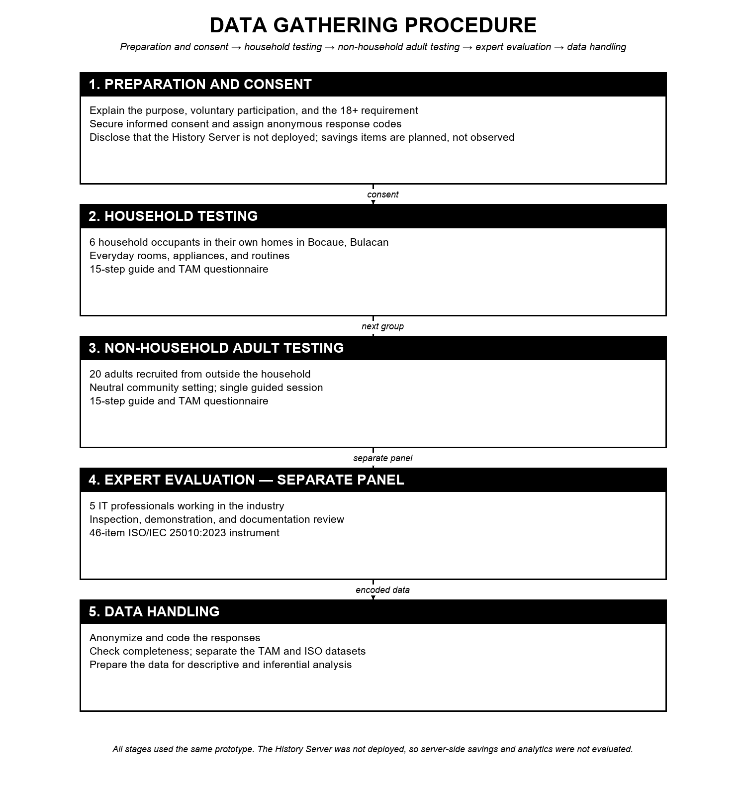
Data Analysis and Statistical Treatment
The analysis combined descriptive statistics, reliability testing, hypothesis testing, and descriptive interpretation of the expert ratings. The user data and the expert data were analyzed separately because they came from different respondent groups and instruments.
Descriptive Analysis
The TAM responses were summarized using means and standard deviations for Perceived Usefulness, Perceived Ease of Use, and the four attitude/intention items that formed the acceptance score. The same descriptive treatment was applied to the seven feature-prioritization items, which described which functions the participants valued most.
Because the TAM instrument used a four-point scale with no neutral midpoint, the means were interpreted using the scale and verbal interpretation presented in 3.3.
The ISO/IEC 25010:2023 ratings were summarized by characteristic and as an overall mean across the five expert evaluators. They were interpreted using the same scale and verbal interpretation in 3.3.
Reliability
Cronbach’s alpha was computed for the TAM scales to check internal consistency. The values were interpreted using the conventional threshold of .70 for acceptable consistency, with the actual coefficients reported in Chapter 3. The ISO expert ratings were not treated as a scale for reliability analysis because the five evaluators formed a purposive professional panel rather than a probability sample.
Hypothesis Testing
The primary hypothesis was evaluated by comparing unnecessary actuator ON-time under two conditions: manual monitoring and SmartSaver’s rule-based control. In the manual condition, the test load was left on after the room was vacated, as it would be in normal household practice; in the automated condition, the motion-clear rule switched the load off. The same room, load, and rule were used across trials so that the comparison was not confounded by a different appliance or placement.
The History Server is not deployed, so runtime and timing data were captured from the local event log or serial timestamps during the scripted test. The analysis used minutes or seconds of unnecessary ON-time per trial, not a server-computed savings figure. The difference between conditions was tested with a paired-samples t-test when the paired differences were approximately normal, or the Wilcoxon signed-rank test when they were not. The null hypothesis was rejected at p < .05.
The effect was reported in three ways: the mean difference in unnecessary ON-time, the percentage reduction relative to the manual condition, and an estimated energy saving computed as:
Estimated energy saved (kWh) = avoided ON-time (hours) × declared wattage (W) / 1000That estimate is labeled as indirect. It is not a metered kilowatt-hour reading, and it is not a utility-bill calculation. The actual results are reported in Chapter 3.
Response time was treated as a secondary operational indicator. The interval between the satisfied trigger and the actuator command or confirmation was recorded and summarized; where a comparable manual response was timed, the two were compared descriptively. The study does not claim a controlled comparison of human response time.
The TAM data were analyzed descriptively. The PEOU–PU relationship in Specific Problem 5 was examined with a correlation and reported as an association, but it is not the study’s primary hypothesis. No regression model is used to test the runtime hypothesis.
Expert Ratings
The five expert evaluators provided one rating per ISO/IEC 25010 statement plus an overall rating. The analysis computed the mean and standard deviation for each characteristic and for the overall rating. No inferential test was applied to the expert data because the panel was purposive and small; the ratings were interpreted descriptively and compared with the functional test results.
Functional Test Data
Functional testing produced pass/fail outcomes for the implemented features rather than survey scores. These outcomes were summarized by test case and by feature, and they were used to contextualize the TAM and ISO results. A feature that failed or required assistance was noted even when the corresponding acceptance rating was high.
Interpretation and Limits
The analysis does not include a qualitative thematic component. Brief comments during testing were used only as context for the quantitative results, not as a separate coded dataset. The study also does not compare SmartSaver against another system, so the results describe one prototype at one evaluation point. Conclusions are therefore limited to the implemented functions, the test settings, and the 26 users and five experts who participated.
Ethical Considerations
The study followed the institution’s research ethics procedures and the privacy requirements of the Data Privacy Act of 2012 (Republic Act No. 10173, 2012). Ethical attention was given to consent, privacy, safety, the relationship between the researchers and the participants, and the handling of the collected data.
Informed Consent and Voluntary Participation
All participants and expert evaluators were informed of the study’s purpose, the procedures they would perform, the expected duration, and the use of the results. They were told that participation was voluntary, that they could decline to answer any item, and that they could withdraw at any time without penalty. Consent was obtained before any testing or evaluation began.
The researchers also explained that the History Server was not deployed in this version. This prevented participants from expecting a live savings dashboard and ensured that their responses to savings-related items were given with the correct understanding of the current build.
Privacy and Confidentiality
Names and signatures were collected only for consent and instrument administration. These forms were kept separate from the analysis file, and each respondent or evaluator was assigned a non-identifying code. Reported results are aggregate; no individual participant, household, or evaluator is identified.
Only the data needed for the study were collected. The system records device states, sensor readings, and rule activity rather than personal conversations or household routines beyond what the sensors detect. Occupancy and appliance-use patterns can still reveal household habits, so those records were treated as confidential research data.
Safety in Household Testing
The household sessions were conducted with the researchers present. The prototype was limited to low-voltage direct-current assemblies and relay modules, with no permanent mains wiring and no mains current measurement. Participants were told to use only safe, supervised loads and to stop the session if any component felt hot, smelled unusual, or behaved unexpectedly.
The researchers did not open walls, alter the distribution panel, or perform permanent electrical work. Any device that required more than the prototype setup was excluded from the session rather than improvised.
Non-Household Adult Testing
The non-household adult session was conducted in a public community setting outside the household. Participation was voluntary and was not tied to any academic or institutional benefit. Participants were told that they could leave at any point, and the researchers avoided pressure to continue when a participant appeared uncomfortable or declined a task.
Because the participants were adults from outside the household and the researchers were students, the researchers explained that a negative or critical evaluation would not affect them in any way. The instrument was administered anonymously through codes rather than through public responses.
Expert Evaluation
The five IT professionals participated as independent evaluators. They were informed that their ratings would be reported in aggregate and that their names would not appear in the analysis. They were also told that the History Server was not deployed, so server-related statements described a designed capability rather than live production behavior.
The experts were not asked to endorse the system. The instrument explicitly invited lower ratings where a characteristic was limited, and the researchers did not review or alter the ratings after submission.
Conflict of Interest and Researcher Responsibility
The researchers developed SmartSaver, which creates a potential conflict of interest in evaluating their own work. This was addressed by separating the user evaluation from the expert evaluation, using a fixed instrument, and reporting negative or limited results rather than presenting only favorable findings.
The researchers also avoided using their relationship with neighbors or participants to pressure participation. No payment or academic benefit was offered in exchange for a positive evaluation. The study’s conclusions are based on the collected responses and test outcomes, not on the researchers’ expectations.
Data Retention and Disposal
Paper forms were stored in a secured location, and electronic files were kept in a password-protected workspace accessible only to the researchers. Identifiable consent forms were separated from coded response files. Data will be retained only for the period required by the institution and then disposed of securely; aggregate results may be retained for reporting and publication.
System Development Methodology
The study used the Iterative Waterfall Model as its system development methodology. The model keeps the structured phases of the waterfall—requirements analysis, design, implementation, testing, and deployment—but allows the researchers to return to an earlier phase when testing exposes a defect, a missing requirement, or a design assumption that does not hold. This hybrid structure suited a hardware–software capstone in which the overall requirements were stable but the implementation details changed as the prototype was tested.
Requirements Analysis
The requirements phase defined what the household needed and what the prototype could realistically provide. It covered the household problem, the implemented parts, the room-level sensing and switching functions, the rule structure, the dashboard workflows, the security boundary, and the evaluation criteria. The scope and delimitation in Chapter 1 were treated as the requirements boundary: catalog-only parts, compound rules, and server-side reporting were excluded or marked as planned.
Design
The design phase translated the requirements into the Hub-and-module architecture, the ESP-NOW message flow, the parts registry, the rule model, the dashboard pages, and the data model. The design also fixed the safety and security boundaries: the relay boots off, wireless modules do not parse commands, the dashboard requires a session, and the History Server link uses a shared API key.
The design was documented before implementation, but it was not treated as frozen. When a design choice created a testing problem—such as route matching, rule validation, or mobile layout—the researchers revised the design and re-checked the affected requirements.
Implementation
The implementation phase produced the Hub firmware, the wireless module capabilities, the local dashboard, the rule engine, the pairing workflow, and the configuration and backup functions. The History Server was designed and partially implemented but not deployed; it remained outside the operational scope of the evaluation.
Implementation proceeded in small increments so that each capability could be tested before the next was added. A new sensor or actuator was not considered complete until it could be paired, identified, read or controlled, and shown correctly on the dashboard.
Testing
Testing was performed at the unit, integration, system, and user-acceptance levels. Unit testing checked individual functions such as rule matching or command handling. Integration testing checked the Hub-to-module path and the dashboard-to-Hub path. System testing checked the complete household workflow, and user acceptance testing checked whether participants could complete the representative tasks.
When a test failed, the defect was returned to the phase where it originated: a requirements ambiguity returned to requirements, a structural problem returned to design, and a coding or wiring fault returned to implementation. The corrected build was then re-tested.
Deployment
Deployment covered the household and non-household adult prototype sessions. The household deployment placed the Hub and modules in the actual rooms, while the non-household adult session used the same prototype in a guided community setting. Deployment was limited to the safe, non-invasive boundary described in Chapter 1. Server deployment was not completed in this version.
Iteration and Feedback
The iterative loop was the defining feature of the methodology. Feedback from testing and from the adviser produced changes to the interface, the rule editor, the pairing flow, the backup and restore behavior, and the device presentation. Each change was followed by regression testing of the affected functions so that a fix did not break a previously working path.
This loop also shaped the evaluation. The version evaluated by the participants was the version that survived the iterations, not an early prototype. The limitations that remained after testing were recorded rather than hidden.
Justification
The Iterative Waterfall Model was appropriate because the project needed both structure and correction. A pure waterfall would have made late hardware or usability discoveries expensive to accommodate; a purely informal build process would have left the requirements, design, and test evidence difficult to document. The iterative waterfall retained the documentation trail while allowing the prototype to improve after each test.
The model also matched the capstone’s timeline. Each phase produced an artifact that could be reviewed—requirements, design notes, firmware, test results, and evaluation instruments—and the final system could be traced back to those artifacts.
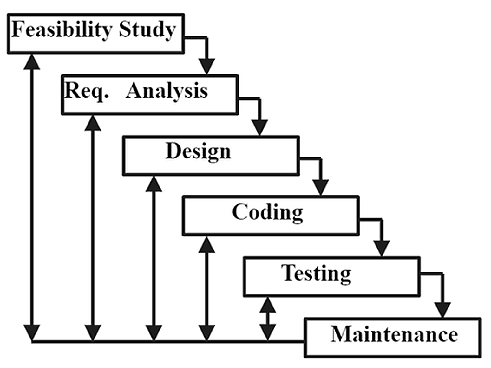
Requirements Specifications and Analysis
The requirements were derived from the household problem, the scope and delimitation, and the capabilities that the prototype could support safely. They were divided into functional requirements, which describe what the system must do, and non-functional requirements, which describe how well it must do it. Priority follows a simple must/should/could scale, and status distinguishes implemented functions from deferred server-side functions.
Requirements Specifications
Functional Requirements
Table 2.3. Functional Requirements
| ID | Requirement | Priority | Status |
|---|---|---|---|
| FR-01 | The Hub shall provide a captive-portal setup for Wi-Fi and dashboard credentials. | Must | Implemented |
| FR-02 | The dashboard shall require a valid username and password and shall issue a session for its HTTP API and WebSocket. | Must | Implemented |
| FR-03 | The Hub shall open a pairing window, list candidate wireless modules, and allow the occupant to assign a unique mod_id. | Must | Implemented |
| FR-04 | The Parts page shall let the occupant enable only the sensors and actuators physically connected to the system. | Must | Implemented |
| FR-05 | The dashboard shall show live sensor readings and the reported state of each actuator. | Must | Implemented |
| FR-06 | The occupant shall be able to switch an actuator manually, with a bounded override that temporarily suppresses automation. | Must | Implemented |
| FR-07 | The rule engine shall evaluate a single trigger and execute a single action, with a defined priority order when rules overlap. | Must | Implemented |
| FR-08 | Rule triggers shall support time, sensor threshold, and reported device state; actions shall support relay, buzzer, and remote module commands. | Must | Implemented |
| FR-09 | The system shall persist parts, rules, pairing, time zone, and preferences across a reboot. | Must | Implemented |
| FR-10 | Backup shall export parts, rules, pairing, time zone, and buzzer preferences while excluding Wi-Fi credentials and dashboard login; restore shall replace those data while preserving the current Wi-Fi and login. | Must | Implemented |
| FR-11 | The Config page shall provide Wi-Fi setup, dashboard login, clock and time zone, backup and restore, restart, and reset actions. | Should | Implemented |
| FR-12 | A relay shall boot in the OFF state, and wireless sensor modules shall not parse actuator commands. | Must | Implemented |
| FR-13 | The Hub shall forward readings, actuator transitions, and topology changes to the History Server when configured. | Could | Designed, not deployed |
| FR-14 | The History Server shall compute and display savings, per-appliance breakdown, payback progress, and health indicators. | Could | Designed, not deployed |
Non-Functional Requirements
Table 2.4. Non-Functional Requirements
| ID | Requirement | Priority | Status |
|---|---|---|---|
| NFR-01 | Interaction capability: an ordinary household occupant shall be able to complete setup, pairing, manual control, and rule creation with minimal assistance. | Must | Implemented |
| NFR-02 | Reliability: a module going offline, losing power, or being removed shall not disturb the rest of the installation. | Must | Implemented |
| NFR-03 | Reliability: persisted configuration and rules shall recover predictably after a power interruption. | Must | Implemented |
| NFR-04 | Security: dashboard access shall require credentials, and the Hub-to-server link shall use a shared API key. | Must | Implemented |
| NFR-05 | Security limitation: ESP-NOW traffic shall be documented as unencrypted in this version, and deployment shall be restricted to a trusted home network. | Must | Documented limitation |
| NFR-06 | Performance: sensor evaluation, rule evaluation, and actuator dispatch shall be responsive enough for household monitoring and control. | Must | Implemented |
| NFR-07 | Compatibility: the dashboard shall work on the browsers and screen sizes a household is likely to use, and the wireless modules shall operate on the 2.4 GHz band. | Should | Implemented |
| NFR-08 | Maintainability: capabilities shall be separated so that a new sensor or actuator can be added without rewriting unrelated parts. | Should | Implemented through capability codes |
| NFR-09 | Flexibility: the system shall be installable in a different dwelling by adding or removing modules and changing configuration, without redesigning the Hub. | Should | Designed |
| NFR-10 | Affordability: the build shall use commercially available off-the-shelf modules rather than custom-manufactured hardware. | Should | Implemented |
| NFR-11 | Safety: the prototype shall use low-voltage assemblies, avoid permanent mains wiring, and keep relays OFF at boot. | Must | Implemented |
Requirements Analysis
The primary stakeholder is the household occupant, who needs visibility, manual control, and automation without learning the protocol or the device identifiers. The researchers are secondary stakeholders because they need a testable system that can be documented and evaluated. The expert evaluators are external reviewers of quality, not users of the household workflow.
The requirements were shaped by four constraints. First, the system is for a single household, so multi-user roles and organisational permissions were excluded. Second, the rule engine is deliberately limited to one trigger and one action so that behavior remains understandable and testable. Third, the current ESP-NOW build does not encrypt wireless traffic, so the security requirement is limited to dashboard access, server authentication, and a trusted-network deployment. Fourth, the History Server is not deployed, so the reporting requirements are marked as designed rather than evaluated.
The main requirement conflict is between local control and server-side analytics. The conflict was resolved by making the Hub independent of the server: local monitoring, rules, and control continue even when the server is unavailable. The server is therefore an optional reporting layer, not a dependency of the core household functions.
Priority was set by household risk. Safety and local control are must-have requirements because a failure there could leave a load switched incorrectly or a user unable to intervene. Backup, configuration, and usability are should-have requirements because they affect maintenance and adoption. Server reporting is a could-have requirement because the household can still track and control loads without it.
The requirements were checked against the scope and the statement of the problem before implementation. Each implemented function maps to at least one specific objective: FR-01 to FR-04 support setup and pairing, FR-05 to FR-08 support tracking and automated control, FR-09 to FR-11 support management and recovery, and FR-12 to NFR-11 support safety and quality. The deferred FR-13 and FR-14 remain traceable to the planned reporting objective but are not counted as evaluated functions.
Logical Specifications
The logical specification describes the system independently of its wiring and physical placement. It defines the main components, the workflows that connect them, the rules that constrain behavior, and the data entities that the system stores.
Logical Architecture
SmartSaver has four logical components:
- Hub — the controller that owns the parts registry, the rules, the device records, the session state, and the local dashboard.
- Wireless module — a remote sensing or switching node that reports readings or actuator state and receives commands over ESP-NOW.
- Dashboard — the browser interface served by the Hub for setup, pairing, monitoring, control, rules, and configuration.
- History Server — an optional reporting component that receives readings and topology changes and computes savings and health metrics. It is designed but not deployed in this version.
The Hub is the single point of coordination. A module does not talk directly to the dashboard, and the dashboard does not talk directly to a module. This keeps the trust boundary and the state model in one place.
System Workflows
Setup and authentication. The occupant connects to the setup network, provides the home Wi-Fi credentials and dashboard login, and reboots the Hub. The dashboard then requires a valid session before any part, rule, or configuration data is exposed.
Discovery and pairing. An unpaired module broadcasts a discovery message. The Hub opens a pairing window and lists the candidate. The occupant assigns a unique mod_id, and the Hub sends the assignment. The module keeps that identity for the current session and is re-registered automatically on later Hub boots.
Part enablement. The occupant enables only the parts physically connected to the system. Wired parts take effect after a Hub restart because the hardware registry is rebuilt at boot; wireless parts are managed through the pairing records.
Monitoring and manual control. The Hub evaluates sensor readings and actuator reports and publishes their current state to the dashboard. The occupant can switch an actuator manually, which creates a bounded override; automation for that actuator is suppressed until the override expires or is cleared.
Rule evaluation and priority. A rule has one trigger and one action. When a trigger is satisfied, the engine issues the action unless a higher-priority rule or an active override takes precedence. The result is one command per target, not a race between competing rules.
Backup and restore. Backup exports parts, rules, pairing, time zone, and buzzer preferences. It excludes Wi-Fi credentials and dashboard login. Restore replaces the exported categories while preserving the current Wi-Fi and login.
Reporting. When the History Server is available, the Hub forwards readings, actuator transitions, and topology changes. The server integrates actuator runtime, applies the declared baseline, power rating, and tariff, and produces savings and health reports. This workflow is designed but not evaluated in the current deployment.
Data Flow
The primary data flow is:
sensor or module state → Hub → dashboard
dashboard command or rule action → Hub → module → state confirmation → Hub → dashboardA sensor reading enters the Hub, is associated with a part, and becomes available to the rule engine and the dashboard. An actuator command leaves the Hub, reaches the module, and returns as a state confirmation. The confirmation is important because it records what the actuator actually did, not only what was commanded.
The secondary data flow is the future reporting path:
Hub → History Server → estimated savings and health reportsThis path is one-way from the Hub’s perspective and is not active in the current deployment. The Hub does not depend on the server for local control, which is why the server can remain undeployed without stopping the household functions.
Business Rules
The logical behavior is constrained by the following rules:
- A rule has exactly one trigger and one action.
- When several rules target the same actuator, priority determines which command is issued.
- A manual override temporarily suppresses automation for that actuator.
- A relay boots in the OFF state.
- A wireless sensor module does not parse actuator commands.
- Only enabled and physically present parts participate in monitoring and automation.
- A catalog-only part remains visible but cannot be evaluated as working hardware.
- Backup excludes Wi-Fi provisioning and dashboard login.
- Restore preserves the current Wi-Fi and login while replacing parts, rules, pairing, and preferences.
- The History Server is optional; local control continues when it is unavailable.
Data Entities and Relationships
Table 2.5. Logical Data Entities and Relationships
| Entity | Key attributes | Relationship |
|---|---|---|
| Part | part ID, kind, capability, display name, enabled state | A part may be referenced by many rules and many readings |
| Device | MAC address, mod_id, module type, last-seen time | A paired device exposes one part capability |
| Rule | rule ID, trigger part and state, action part and command, priority, enabled state | A rule references one trigger part and one action part |
| Reading | part ID, value, timestamp | Many readings belong to one part |
| Preference | time zone, buzzer setting, UI preference | One active preference set per Hub |
| Server record | device, part, reading, topology, derived savings | Planned; populated only when the server is deployed |
The Hub stores the operational entities in its local registry and rule files. The History Server, when deployed, is planned to store the reporting entities in SQLite. The server’s planned savings records are derived from readings and actuator transitions rather than entered directly by the user.
Inputs and Outputs
The logical inputs are sensor readings, actuator state reports, pairing candidates, user commands, rule definitions, and configuration values. The logical outputs are dashboard state, actuator commands, pairing assignments, validation messages, backup files, and—when the server is deployed—savings and health reports.
The specification deliberately separates logical behavior from physical implementation. Pin assignments, module wiring, and enclosure details belong to the physical specification; the logical model remains valid if the hardware is replaced by an equivalent module.
The Level 0 diagram identifies the Hub as the single process, the occupant, sensors, actuators, and the planned History Server as external entities, and the local registry as data store D1. It provides the context view for the logical data flow in Figure 2.4.
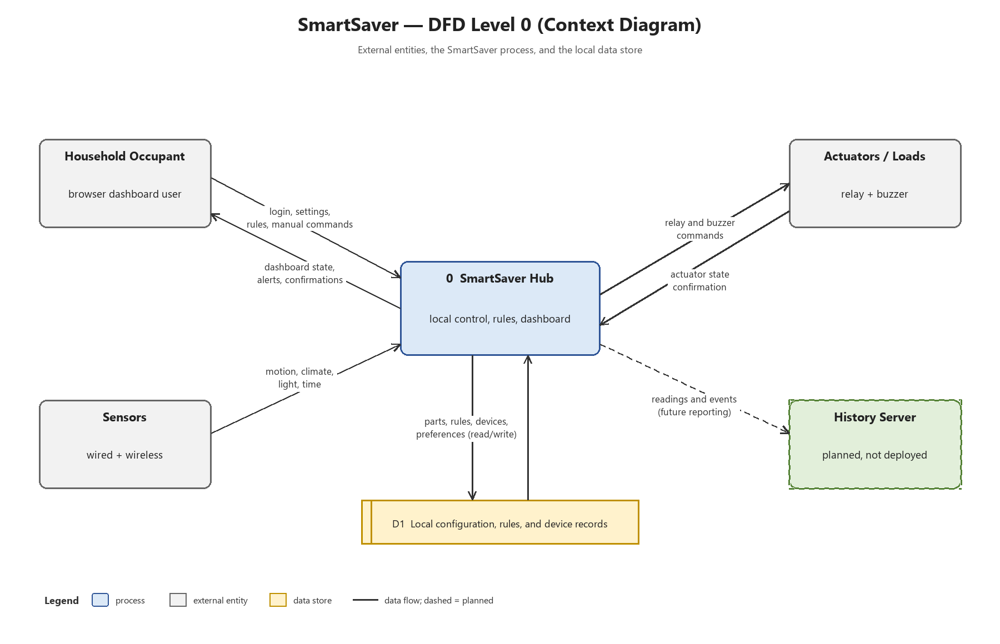
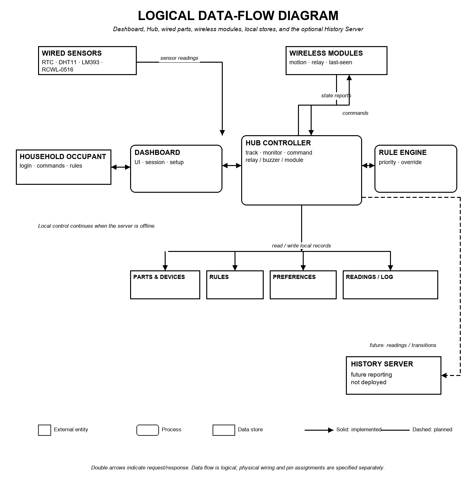
Physical Specifications
The physical specification describes the hardware, power, network, storage, and deployment environment that realize the logical design. The prototype uses commercially available development boards and modules assembled on breadboard and prototype wiring; it does not use custom-manufactured hardware.
Hub Hardware
The Hub is an ESP32 Dev Module on the classic 30-pin DevKit V1 footprint. In the deployed setup it is powered from an enclosed 12 V, 5 A AC-to-DC supply connected to a 220 V outlet; the supply feeds a DC-DC buck converter set to 5 V. The 5 V rail powers the ESP32 and the sensors that require 5 V, while the ESP32’s own 3.3 V rail powers the 3.3 V parts. The pin assignment is summarized below.
Table 2.6. Hub GPIO Assignments
| Function | Module | Hub GPIO | Direction | Notes |
|---|---|---|---|---|
| Motion sensing | RCWL-0516 | 27 | Input | HIGH while motion is detected |
| Climate sensing | DHT11 | 4 | Input | 10 kΩ pull-up to 3V3 when the sensor is bare |
| Light sensing | LM393 photoresistor module, DO | 34 | Digital input | Digital comparator output; threshold set by the module trimpot |
| Real-time clock | DS3231 | 21 (SDA), 22 (SCL) | I²C | Address 0x68; battery-backed time source |
| Buzzer | Active buzzer | 26 | Output | Steady HIGH while sounding; boots LOW |
| Power | 5 V rail from buck converter; 3.3 V from ESP32 | — | — | 12 V supply → 5 V buck → ESP32 and 5 V sensors; 3.3 V for 3.3 V parts; common ground |
The light sensor is the 3-pin LM393 module, not a bare photoresistor. Its output is digital, so GPIO 34 is read with digitalRead(); the light threshold is adjusted on the module’s trimpot and cannot be changed from the dashboard. The DHT11 uses a single-wire data connection, and the DS3231 shares the I²C bus at the default address.
Wireless Module Hardware
Each wireless module is an ESP32-C3 Dev Module flashed with exactly one capability. A module is either a sensor or a switch, never both.
Table 2.7. Wireless Module GPIO Assignments
| Capability | Sensor or actuator | Module GPIO | Notes |
|---|---|---|---|
| Motion | RCWL-0516 | 3 | Sensor-only build; module transmits readings and does not parse actuator commands |
| Switch | 2-channel relay board | 3 (IN1), 4 (IN2) | Active HIGH; both channels driven together as one logical switch |
| IR emitter | IR LED scaffold | 5 | Reserved; not implemented in this version |
The relay board has a 5 V coil but a 3.3 V-compatible logic input. Its COM/NO/NC contacts are dry and isolated from the ESP32. In this prototype the switched load is a low-voltage test load; mains switching is outside the study’s scope and would require a qualified electrician.
Power and Safety
The power chain is 220 V AC outlet → enclosed 12 V, 5 A AC-to-DC supply → DC-DC buck set to 5 V → ESP32 and 5 V sensors. The ESP32’s 3.3 V output supplies the 3.3 V parts, including the RTC. The relay board is powered from the 5 V rail, while its IN1 and IN2 inputs are driven by the C3’s 3.3 V GPIOs. All devices share a common ground.
Mains voltage is limited to plugging the enclosed supply into the wall outlet; there is no exposed mains wiring, no panel work, and no mains switching by the prototype. The 12 V and 5 V outputs are the working voltages on the bench.
The wiring follows four safety rules: no 5 V signal is connected directly to an ESP32 GPIO; the relay coil is never driven directly from a GPIO; the relay boots OFF; and the light module’s DO output is kept at 3.3 V or level-shifted before reaching the Hub. The prototype does not open walls, modify the distribution panel, or perform permanent mains wiring.
The wired sensors use quick connectors rather than loose header pins. The build standardizes the connector orientation and the VCC/GND order so that a sensor cannot be plugged in with reversed power polarity. The data lead is color-coded to the corresponding Hub GPIO, which makes the signal path readable during assembly and checking. This connector standard reduces wiring errors and protects the sensors from reverse-polarity damage.
Network Infrastructure
The Hub joins the household’s 2.4 GHz Wi-Fi network and serves the dashboard at smartsaver.local or at its assigned IP address. The wireless modules communicate with the Hub over ESP-NOW on the Hub’s operating channel. Pairing uses a channel-hop discovery sequence across channels 1–11; once the module receives the Hub’s acknowledgement, it locks to the Hub’s channel and registers as a peer.
ESP-NOW traffic is currently unencrypted. The broadcast discovery frames cannot use the multicast encryption key in this build, so the pre-shared and local master keys remain defined but disabled. The deployment is therefore restricted to a trusted home network, and the limitation is recorded rather than presented as a solved security property.
The History Server, when deployed, would be reached over the internet at its own endpoint. In this version it is not deployed, so the network path ends at the local Hub and dashboard.
Storage and Software Environment
The Hub stores its operational data in local flash: the parts registry, the rules, the paired-device records, and the configuration and preferences. The History Server, when deployed, is designed to use a Python standard-library service with a SQLite database; its tables would hold devices, parts, readings, topology changes, and derived savings.
The firmware is built with the Arduino IDE and the ESP32 Arduino core. The dashboard is served by the Hub as embedded HTML, CSS, and JavaScript rather than as a separate web application. The History Server is a separate service and is not part of the local control path.
Physical Architecture
Physically, SmartSaver is a star topology with the Hub at the center. Wired sensors and the buzzer connect directly to the Hub; wireless modules connect over ESP-NOW; the dashboard connects over the household Wi-Fi. Each module is self-contained and can be placed in the room where its sensor or load is located, subject to power and radio range.
The physical architecture is deliberately modular. A room can be added by placing a module and pairing it, and a module can be removed without rewiring the Hub. The Hub remains the single controller and the single point of configuration.
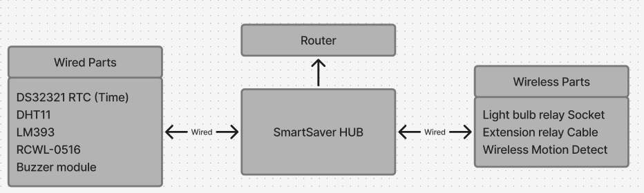
The physical plan is documented as four module-level schematics. They show power and signal paths rather than a custom printed circuit board, because the prototype uses off-the-shelf modules and quick connectors. The diagrams are functional references, not to-scale electrical drawings.
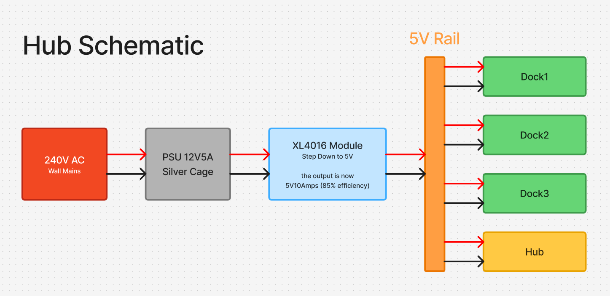
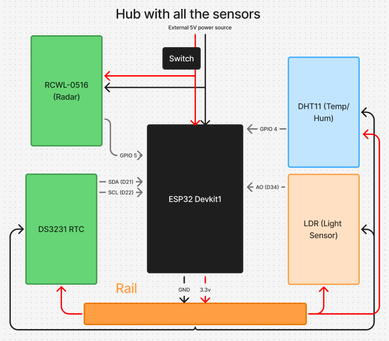
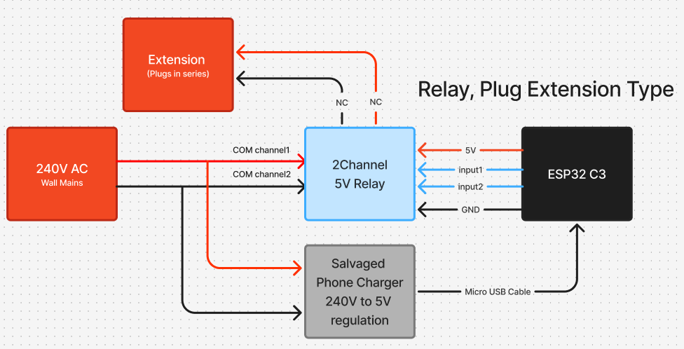
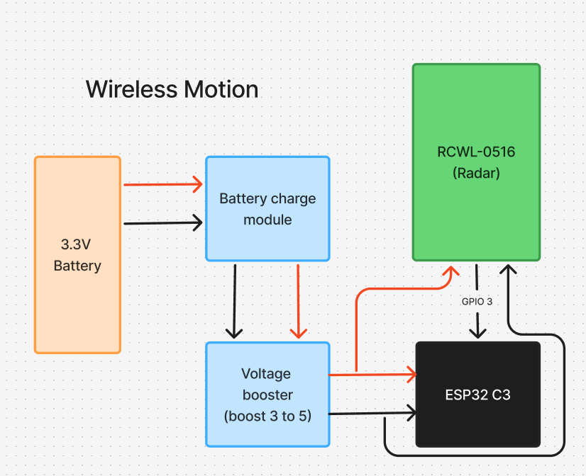
System Design
The system design translates the requirements and logical specifications into an architecture, a data design, a set of process flows, and an interface. It also records the rationale for the main design choices so that the implementation can be traced back to the problem and the theoretical framework.
Architectural Design
SmartSaver uses a local-first, hub-and-module architecture. The Hub owns the state, the rules, the device records, and the dashboard. Wired parts connect directly to the Hub; wireless modules connect over ESP-NOW; the browser dashboard connects over the household Wi-Fi. The History Server, when deployed, is an optional reporting service outside the local control path.
The architecture separates four concerns:
- Sensing and actuation are distributed to the parts and modules closest to the room.
- Coordination and rule evaluation are centralized in the Hub.
- Presentation is handled by the browser dashboard.
- Historical reporting is delegated to the optional server.
This separation keeps the control loop short and makes the system understandable: a module reports, the Hub decides, and the dashboard shows the result.
Data and Database Design
The Hub stores operational data in local flash as structured records: the parts registry, the automation rules, the paired-device records, and the configuration and preferences. These records are small, read frequently, and rewritten only when the occupant changes the configuration. They are not a relational database, and the paper does not describe them as one.
The History Server is designed around a SQLite database with the following logical entities:
Table 2.8. System Data Entities and Relationships
| Entity | Purpose | Key relationships |
|---|---|---|
| Device | Stores a paired module’s identity and last-seen state | One device exposes one part capability |
| Part | Stores the part type, capability, display name, and enabled state | One part has many readings and may be referenced by many rules |
| Rule | Stores one trigger, one action, priority, and enabled state | A rule references one trigger part and one action part |
| Reading | Stores timestamped sensor or actuator values | Many readings belong to one part |
| Topology | Stores pairing and checklist changes | References devices and parts |
| Settings | Stores time zone, tariff, baseline, and preference values | One active configuration per deployment |
| Derived savings | Planned store of estimated runtime, energy, and cost savings | Derived from readings, actuator transitions, and settings; not deployed |
The planned savings records are derived, not directly entered. This matters because the paper treats savings as an estimated future output, not as a measured electrical quantity. The local Hub remains the source of operational state; the server is a future reporting layer.
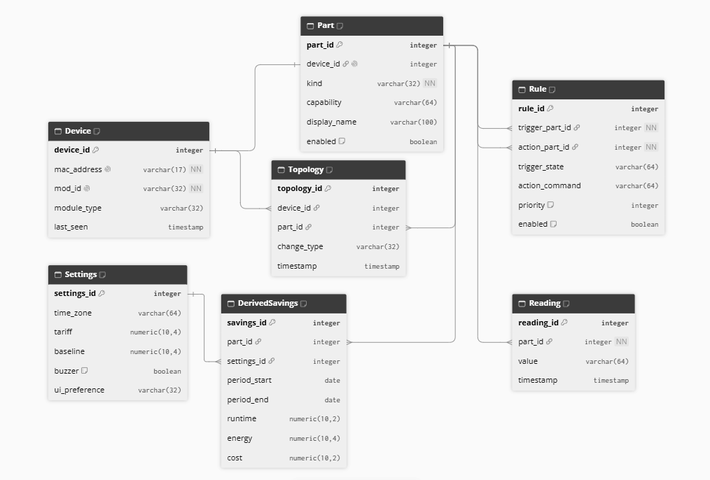
Process Design
The main processes are designed as short, observable flows.
Table 2.9. Process Design
| Process | Trigger | Output |
|---|---|---|
| Setup | First boot or Wi-Fi change | Hub joins the home network; dashboard credentials stored |
| Login | Dashboard access | Authenticated session; dashboard data available |
| Pairing | Occupant opens the pairing window and a module announces itself | Candidate listed; mod_id assigned; device record created |
| Part enablement | Occupant toggles a part and applies | Registry rebuilt; part becomes active after restart |
| Monitoring | Sensor or actuator report | State updated on the dashboard; reading recorded |
| Rule evaluation | Time tick, sensor change, or device-state change | One action command per target, subject to priority |
| Manual override | Occupant switches an actuator | Bounded override; automation suppressed for that target |
| Backup and restore | Occupant downloads or uploads a backup | Parts, rules, pairing, and preferences transferred; Wi-Fi and login preserved |
| Reporting | Hub forwards to the server, when deployed | Savings and health views computed by the server |
The rule-evaluation flow deserves emphasis. The engine does not run every rule as an independent actor. It resolves the applicable rules, applies priority, and issues one command per target. This prevents two rules from fighting over the same relay and makes the resulting state explainable.
Interface Design
The dashboard is designed as a mobile-first control surface with four main pages: Home, Parts, Rules, and Config. A bottom navigation bar keeps the four pages reachable on a phone, while the header carries the connection status, the analytics shortcut, and the theme toggle.
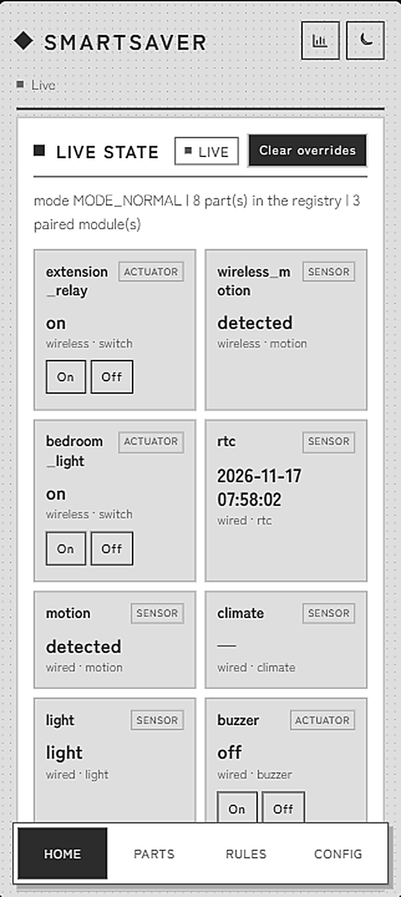
Home. The Home page shows one card per active part. Sensor cards show the latest reading; actuator cards show On and Off controls and the remaining override time. The page is designed for a quick glance, so the occupant can see what is active without opening a detail view.
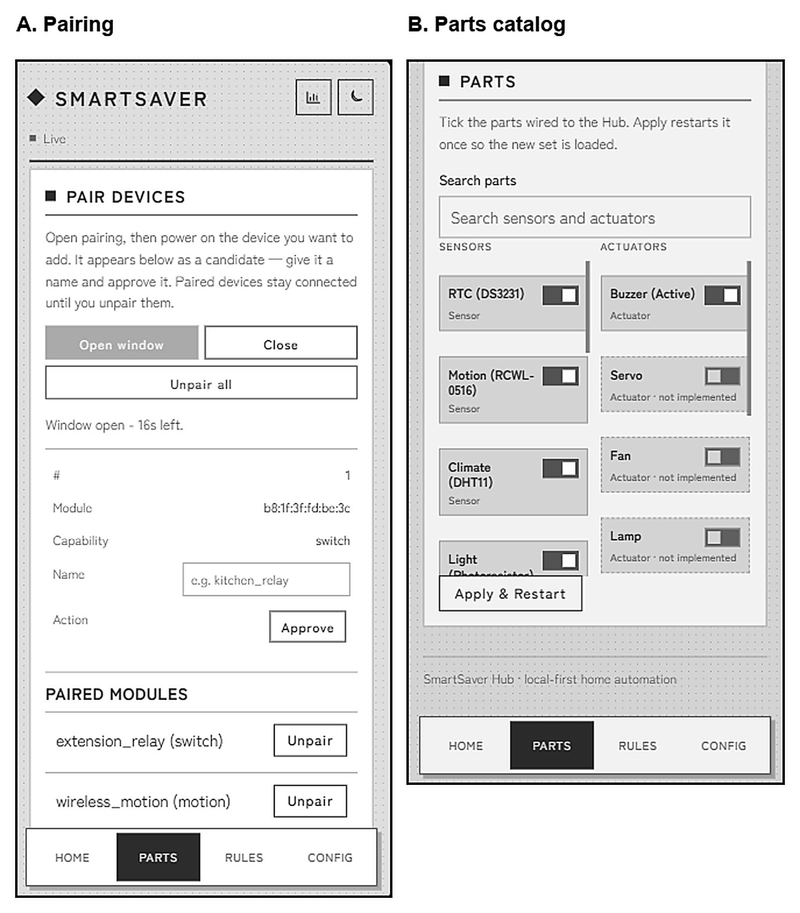
Parts. The Parts page defines and connects the sensors, devices, and modules attached to the system. Sensors and actuators are separated into two columns of toggle cards; each card names the part, describes what it does, and marks unimplemented catalog items so the occupant does not enable hardware that is not present. The pairing window is on the same page because pairing and part enablement are closely related tasks.
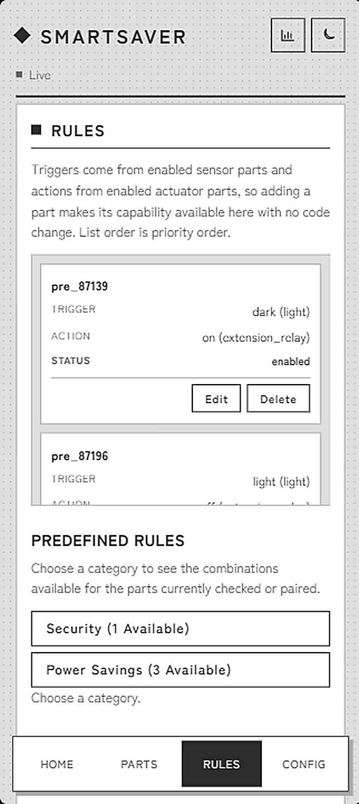
Rules. The Rules page presents predefined rule bundles by category and lists the active rules. Each rule shows its trigger, action, priority, and enabled state, so the occupant can inspect what the automation will do before trusting it. The list scrolls after a short set of cards to keep the page compact.
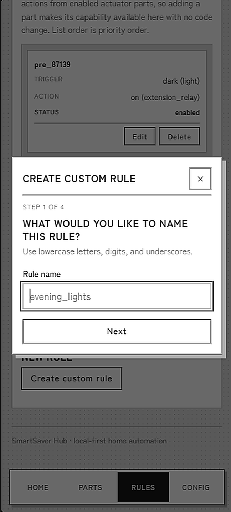
Custom-rule wizard. The wizard uses four steps: name, trigger, action, and review. The review step exists because the rule model is deliberately small; the user should be able to confirm the single trigger and single action before saving.
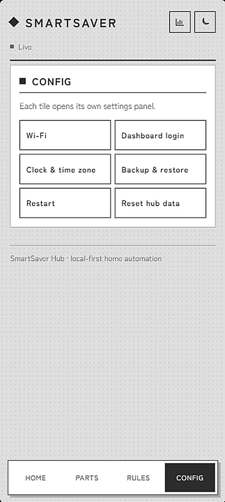
Config. Config uses six tiles: Wi-Fi, dashboard login, clock and time zone, backup and restore, restart, and reset. Destructive actions are grouped and labeled so that a routine configuration change is not confused with a reset.
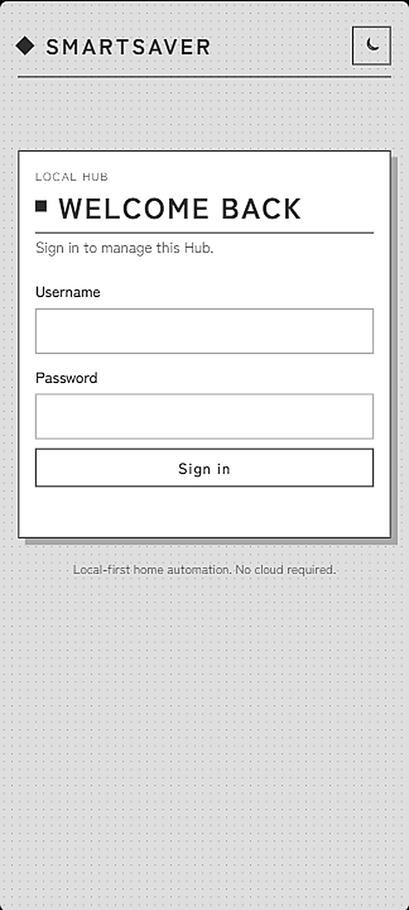
Login. The login screen is a dedicated state of the same interface rather than a separate application. It uses the same visual language, a labeled username and password form, a status area, and a theme toggle. Error messages distinguish an invalid sign-in from an unreachable Hub, so the user knows whether to retry or check the connection.
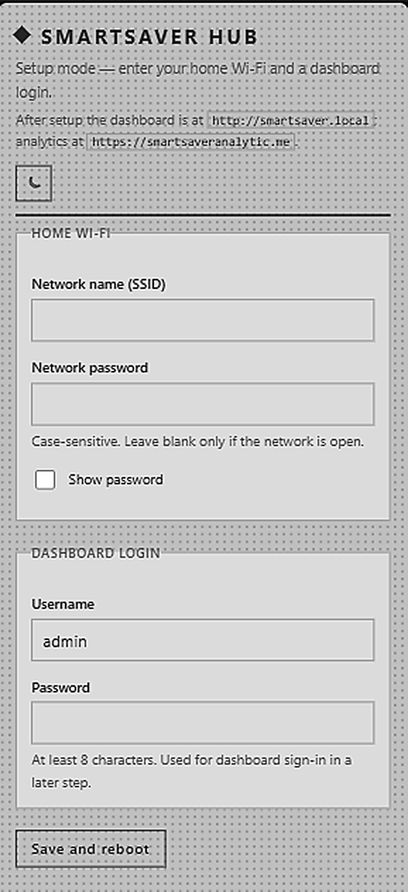
Setup. The setup page is the first-run captive portal for the home Wi-Fi credentials and the initial dashboard login. It is intentionally limited to provisioning; backup and restore live in Config, not on the setup page.
Design Rationale
The interface design follows the cognitive-load argument in Chapter 1: reduce extraneous decisions, keep status visible, and avoid making the occupant reconstruct system state from memory. The automation design follows bounded rationality: the system carries routine decisions, while the occupant retains manual override and configuration control. The separation of local control from server reporting follows the TAM concern with usefulness and ease of use: the system must remain useful even when the optional reporting layer is absent.
The design also preserves transparency. Automation is not hidden behind a black box; the rule list, the active state, and the override countdown show why the system acted. This matters for trust and for debugging, and it keeps the system consistent with the study’s rule-based, inspectable scope.
System Implementation
Implementation moved the design from the bench to the household and non-household adult sessions in controlled stages. The strategy was deliberately small-scale: assemble and test the hardware, configure the Hub, pair the modules, enable only the physically present parts, run the system in the intended rooms, and evaluate it before considering any wider rollout.
Deployment Strategy
The deployment followed five stages:
- Bench assembly and firmware loading. The Hub, wired sensors, buzzer, and wireless modules were assembled and powered on the bench. The firmware was flashed, the serial log was checked, and each module was confirmed to boot with its intended capability.
- Hub configuration. The Hub was connected to the household Wi-Fi through the setup page, dashboard credentials were created, and the time zone and RTC were configured.
- Module pairing and part enablement. The pairing window was opened, each module was assigned a unique
mod_id, and only the parts physically connected to the system were enabled. Wired parts were applied through a Hub restart; wireless parts were managed through the pairing records. - Household pilot. The configured system was placed in the test rooms, the six household participants were oriented, and the representative tasks were performed in the actual household setting.
- Non-household adult demonstration and expert evaluation. The same prototype was used for the 20-adult session and for the five IT professionals’ inspection. The non-household adult session tested first-time use; the expert session tested quality against the full ISO/IEC 25010 instrument.
The History Server was not part of the deployment. Its design and partial implementation remained outside the operational rollout, so the deployment covered the local Hub, the dashboard, the wireless modules, and the wired parts only.
Configuration and Safety Checks
Before each session, the researchers checked the 12 V supply, the 5 V buck output, common ground, sensor polarity, relay boot state, and dashboard login. The relay was confirmed OFF at boot, the light module’s digital output was checked against its trimpot setting, and the buzzer was tested without leaving it active. The quick connectors were checked against the standard pin order, and each color-coded data lead was confirmed against its Hub GPIO. The system was operated only with low-voltage test loads; no permanent mains wiring was performed.
The dashboard configuration was also checked: the connection status, the active parts, the rule list, the override countdown, and the backup and restore controls. A backup was downloaded after configuration so that the working setup could be restored if a later change failed.
User Orientation
Orientation used the 15-step SmartSaver user guide. The researcher explained the Hub, the paired modules, the dashboard pages, and the difference between manual control and automation. The participant then performed the tasks: signing in, reading the Home page, identifying a paired module, switching a load, creating a rule, applying an override, and checking Config.
The orientation was task-based rather than lecture-based. The participant operated the system while the researcher observed and answered questions. This made the session closer to actual use and gave the participant a chance to encounter the interface’s labels, status messages, and error states.
Rollout
The rollout was limited to the study’s test deployment. Six household occupants used the system in their homes, 20 non-household adults used it in a guided community session, and five IT professionals evaluated it separately. There was no mass distribution, no multi-household installation, and no server deployment.
The rollout was also non-invasive. The Hub and modules were placed in the rooms, the relay switched a low-voltage test load, and no walls, outlets, or distribution panels were modified. The system could be removed without restoring the house to a previous electrical state because no permanent electrical work had been done.
Operational Handover
At the end of each session, the participant was shown how to sign in, view live state, switch a load manually, clear an override, and open the rule list. The researcher also explained that the History Server was not deployed, so savings reporting was a planned capability rather than a live dashboard.
The handover materials were the user guide and the configured Hub. The guide covered the same tasks used in the session, so the participant could repeat them without the researcher present. Backup and restore were demonstrated as the recovery path for configuration changes.
Implementation Limits
The implementation did not include OTA firmware updates, a mobile application, a deployed History Server, or a full home electrical installation. The system was implemented as a working prototype for household evaluation, not as a manufactured consumer product. Those limits are consistent with the scope and are carried into the evaluation rather than hidden.
Tools and Technologies Used
The project used commercially available hardware and standard development tools. No custom-manufactured board, specialised industrial controller, or licensed software was required.
Hardware Development Tools
Table 2.10. Hardware Development Tools
| Tool or component | Role in the study | Notes |
|---|---|---|
| ESP32 Dev Module | Hub controller | Classic 30-pin DevKit V1 form factor; Wi-Fi, processing, GPIO, and local dashboard hosting |
| ESP32-C3 Dev Module | Wireless module controller | One capability per board; USB CDC enabled for serial output |
| DS3231 RTC | Time source | I²C at 0x68; battery-backed clock for time-based rules |
| RCWL-0516 | Motion sensing | Wired on the Hub and as a wireless module capability |
| DHT11 | Temperature and humidity sensing | Single-wire digital sensor; 10 kΩ pull-up when bare |
| LM393 photoresistor module | Light sensing | Digital DO output; threshold set by the module trimpot |
| Active buzzer | Local audible output | GPIO 26; steady HIGH while sounding |
| 5 V relay module | Load switching | Two channels driven together; dry contacts; low-voltage test load |
| 12 V, 5 A AC-to-DC supply | Hub power | Enclosed supply connected to a 220 V outlet |
| DC-DC buck converter | 5 V rail | Set to 5 V; feeds the ESP32 and 5 V sensors |
| Quick connectors and color-coded leads | Sensor connection | Standardized polarity and data-lead color to reduce wiring errors |
| Breadboard and prototype wiring | Assembly | Low-voltage direct-current prototype only |
| Micro-USB and USB-C cables | Power and programming | Hub and module connection to the development machine |
The development machine was an ordinary laptop with a USB port and a browser. No specialised workstation was required. The practical minimum is a 64-bit operating system, at least 4 GB of RAM, and enough free storage for the Arduino IDE, board support, and libraries; 8 GB of RAM is comfortable but not necessary.
Bill of Materials and Prototype Cost
The prototype cost was estimated from the component list rather than from a retail quotation. The amounts below are indicative Philippine peso prices from the project’s cost template; they should be checked against supplier receipts before the figure is treated as final.
Table 2.11. Bill of Materials and Prototype Cost
| Device / component | Qty | Unit cost (PHP) | Subtotal (PHP) | Notes |
|---|---|---|---|---|
| Hub | ||||
| ESP32 Dev Module | 1 | 450 | 450 | Hub controller |
| Enclosure | 1 | 150 | 150 | Hub housing |
| RCWL-0516 motion sensor | 1 | 80 | 80 | Wired motion input |
| DHT11 climate sensor | 1 | 120 | 120 | Temperature and humidity |
| LM393 photoresistor module | 1 | 30 | 30 | Digital light input |
| DS3231 RTC | 1 | 150 | 150 | Time source |
| Active buzzer | 1 | 40 | 40 | Local alert |
| Hub subtotal | 1,020 | Excludes Hub power chain | ||
| 12 V, 5 A supply, buck converter, connectors, and wiring | 1 set | ___ | ___ | Hub power; supplier-dependent |
| Wireless Motion | ||||
| ESP32-C3 Dev Module | 1 | 250 | 250 | Motion node controller |
| RCWL-0516 motion sensor | 1 | 80 | 80 | Wireless motion input |
| Wireless motion subtotal | 330 | Excludes power kit | ||
| Wireless power kit | 1 kit | ___ | ___ | Battery, holder, charger, boost, buck, switch, wiring, enclosure |
| Wireless Relay — Extension Type | ||||
| ESP32-C3 Dev Module | 1 | 250 | 250 | Relay node controller |
| 5 V relay module | 1 | 120 | 120 | Two channels driven together |
| Extension relay subtotal | 370 | Excludes power kit and extension hardware | ||
| Wireless power kit | 1 kit | ___ | ___ | Battery, holder, charger, boost, buck, switch, wiring, enclosure |
| Extension cord/outlet | 1 | ___ | ___ | Relay enclosure and switched outlet |
| Wireless Relay — Modified Pull Chain Socket | ||||
| ESP32-C3 Dev Module | 1 | 250 | 250 | Relay node controller |
| 5 V relay module | 1 | 120 | 120 | Two channels driven together |
| Pull-chain relay subtotal | 370 | Excludes power kit and socket hardware | ||
| Wireless power kit | 1 kit | ___ | ___ | Battery, holder, charger, boost, buck, switch, wiring, enclosure |
| Pull-chain socket | 1 | ___ | ___ | Modified socket and enclosure |
| Miscellaneous and Build Support | ||||
| Small parts, consumables, fabrication tools, and first two casing iterations | 1 lot | 2,000 | 2,000 | Screws, standoffs, headers, wire, solder, heat-shrink, tape, adhesive, tools, and two casing iterations |
| Known device total, both relay variants | 2,090 | Excludes Hub power, three power kits, extension hardware, and socket hardware | ||
| Known prototype total including miscellaneous support | 4,090 | Device total plus ₱2,000 miscellaneous and build support |
The wireless power kit is listed once per wireless device. Its contents are: 18650 Li-ion cell, 18650 holder, TP4056-class charger/protection board, 3.7 V → 5 V boost converter, 5 V → 3.3 V buck converter, slide switch, wiring and connectors, and module enclosure. Prices are left blank until supplier quotes are confirmed.
The known device total is ₱2,090 for the Hub, one wireless motion node, one extension-type relay, and one pull-chain relay, before the three wireless power kits and the remaining hardware. Adding the ₱2,000 miscellaneous and build-support lot brings the known prototype total to ₱4,090.
The miscellaneous lot covers the small parts that are easy to overlook in a BOM: screws, standoffs, headers, wire, solder, heat-shrink, tape, adhesive, the tools used during fabrication, and the first two casing iterations. It is a one-time prototype cost, not a per-unit cost; the tools and some consumables are reused, so the lot should not be multiplied for every additional room.
This supersedes the earlier ₱1,640 core figure, which counted only one RCWL-0516 and one relay variant.
The incremental cost of a relay room is about ₱370 before its power kit and enclosure hardware; a motion room is about ₱330 before its power kit. The power kit is the dominant unknown because it includes the cell, charger, and two converters.
The costing excludes shipping, taxes, tools, labour, and server hosting. The History Server is not deployed, so its monthly hosting cost is not part of the prototype total. No labour cost is assigned because the build was a student prototype.
Software Development Tools
Table 2.12. Software Development Tools
| Tool | Role | Notes |
|---|---|---|
| Arduino IDE 2 | Firmware development and upload | Used for both the Hub and the wireless modules |
| ESP32 Arduino core 3.3.x | Board support | Reference version 3.3.x; not auto-updated across major versions |
| ArduinoJson 7.x | JSON serialization | Used for device, part, rule, and protocol messages |
| ESP Async WebServer and Async TCP | Local dashboard server | ESP32Async libraries |
| RTClib by Adafruit | RTC access | Pulls in Adafruit BusIO |
| DHT sensor library by Adafruit | Climate sensor access | Pulls in Adafruit Unified Sensor |
| LittleFS | Local storage | Parts, rules, device records, and preferences |
| HTML, CSS, and JavaScript | Dashboard | Embedded in the Hub firmware and served to the browser |
| Browser developer tools | Interface checking | Used for layout, console, and responsive checks |
| Python 3 standard library | History Server design | No third-party framework |
| SQLite | History Server storage | Planned reporting database; not deployed |
| Ubuntu 24.04, systemd, and UFW | Server environment | Designed deployment target; not part of the current evaluation |
The build used the Minimal SPIFFS (1.9 MB APP with OTA / 128 KB SPIFFS) partition scheme on the Hub because the application outgrew the default 1.2 MB app slot. Upload speed was set to 921600 with a 115200 fallback, and the serial monitor ran at 115200.
Database and Storage Tools
The Hub uses LittleFS for small JSON records: the parts registry, rules, paired-device records, and configuration. This is sufficient because the records are small and are rewritten only when the configuration changes. The History Server design uses SQLite for readings, devices, parts, topology, settings, and derived savings. SQLite was chosen because it is file-backed, requires no separate database server, and fits a small standard-library Python service.
Network and Deployment Tools
The local network uses the household’s 2.4 GHz Wi-Fi for the dashboard and ESP-NOW for Hub-to-module communication. The History Server design target is a single DigitalOcean droplet running Ubuntu 24.04, with systemd for process supervision and UFW for port restriction. That deployment is not part of the current evaluation.
Why These Tools
The tool set was chosen for availability, cost, and fit with the prototype. The ESP32 family provides Wi-Fi, processing, and GPIO on an inexpensive board; the sensors are off-the-shelf modules; the Arduino IDE and libraries are widely documented; and the dashboard uses standard browser technology rather than a separate application stack. The History Server uses the Python standard library and SQLite to avoid external dependencies, although its deployment remains pending.
Schedule Timeline
The work was intermittent across both semesters because of other subjects and part-time jobs, so the week ranges below are estimates rather than a record of continuous effort.
3rd Year, 2nd Semester — Estimated 15 Weeks
Table 2.13. Third-Year, Second-Semester Schedule
| Week | Main activity | Output |
|---|---|---|
| 1–2 | Problem scoping and initial literature search | Working problem statement |
| 3–4 | Literature review and research gap | Draft review and gap |
| 5–6 | Requirements, scope, and design | Requirements and Hub-and-module design |
| 7–8 | Single-module hardware build | One Hub and one working module |
| 9–10 | Basic firmware and demonstration | Sensor or command path working |
| 11–12 | Proposal writing and rehearsal | Proposal manuscript and demo script |
| 13 | Proposal defense | One-week panel demonstration and feedback |
| 14–15 | Documentation and revision planning | Revision list carried into the next semester |
4th Year, 1st Semester — Estimated 14 Weeks
Table 2.14. Fourth-Year, First-Semester Schedule
| Week | Main activity | Output |
|---|---|---|
| 1–2 | Full hardware assembly | Hub, wired parts, and multiple modules |
| 3–4 | Core firmware | Parts registry, pairing, sensing, actuator control |
| 5–6 | Dashboard development | Home, Parts, Rules, Config, login |
| 7–8 | Rule engine and overrides | Priority resolution and manual override |
| 9–10 | Integration | End-to-end local workflow |
| 11–12 | Functional and safety testing | Test results and defect list |
| 13 | Fixes, regression, evaluation preparation, evaluation, analysis, and writing | Stabilized build, TAM and ISO data, analysis, draft manuscript |
| 14 | Final defense | Defense presentation and panel questions |
The final evaluation week is the most compressed part of the schedule: fixes, regression, evaluation preparation, evaluation, analysis, and writing all shared Week 13, and the defense followed the next day in Week 14. This left little time to revise the system after evaluation or to re-administer an instrument, so the results describe the build as it stood at evaluation.
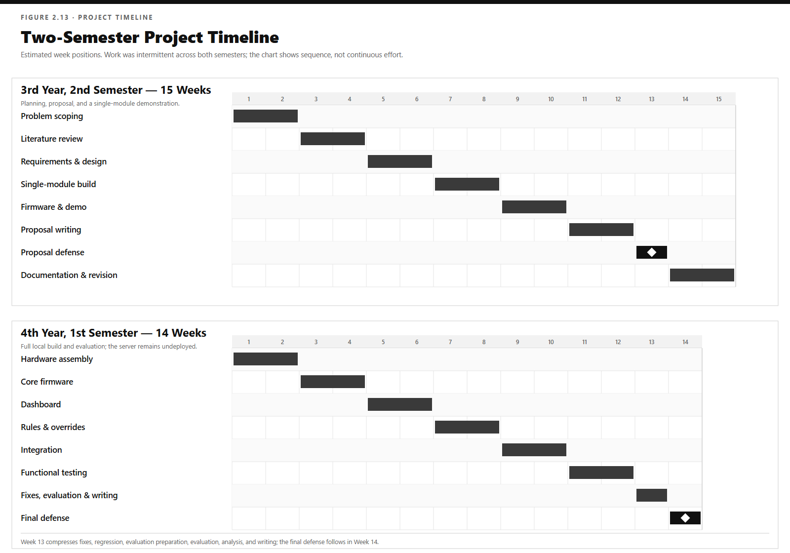
Responsibilities
The project was carried out by three researchers. Responsibilities were divided by primary role, but the work overlapped: all three helped with hardware, and no external developer was hired. The adviser provided technical and academic guidance rather than implementation work.
Table 2.15. Team Responsibilities
| Team member | Primary responsibility | Specific contributions |
|---|---|---|
| Amboya, Kenneth E. | Firmware and system architecture | Full firmware implementation, system design and architecture, Hub and module logic, rule engine, pairing and communication, debugging, and hardware support; co-lead for research documentation |
| Carillo, Bianca B. | Documentation and interface design | Co-lead for research documentation, UI/UX design, dashboard layout and interaction, responsive styling, and development of the ISO/IEC 25010 evaluation questionnaire; hardware support |
| Perez, Jhude Christopher L. | Testing and evaluation coordination | Participant and evaluator recruitment, scheduling and coordination, unit testing and edge-case identification, development of the TAM questionnaire, and hardware support |
The division was practical rather than rigid. Amboya and Carillo led the written documentation, while Perez handled the social coordination needed to secure respondents and evaluators. Carillo’s interface work and Perez’s testing work fed back into Amboya’s firmware and architecture, so the roles met in the middle rather than running in separate lanes.
All three researchers contributed to hardware assembly and checking, researching the related literature and studies, initial proposal planning, participant sessions, analysis, and manuscript review. The adviser reviewed the requirements, the instruments, and the manuscript, and gave feedback during the iterative development cycle. The adviser did not take part in the user sessions or the expert evaluation, which kept the evaluation independent of the implementation team.
All three researchers were responsible for the accuracy of the reported results. No part of the system or the evaluation was delegated to a third party.
Implementation Plan
The implementation plan describes how the prototype is installed, configured, introduced to users, monitored, evaluated, and maintained. It is a plan for a single-household prototype, not a mass deployment.
Installation and Configuration
Installation begins with the Hub, the wired sensors, and the wireless modules. The Hub is powered from the enclosed 12 V, 5 A supply through the 5 V buck converter, the wired sensors are connected through the standard quick connectors with the agreed polarity and color-coded data leads, and the modules are placed within radio range of the Hub. The relay is kept OFF at boot, and any connected load remains a low-voltage test load.
Configuration follows the dashboard sequence:
- Connect the Hub to the home Wi-Fi and set the dashboard credentials through the setup page.
- Set the clock and time zone so that time-based rules use the correct local time.
- Open the pairing window and assign a unique
mod_idto each module. - Enable only the parts physically connected to the system and apply the change.
- Create the initial rules, starting with one room and one routine.
- Download a backup before making further changes.
No legacy data migration is required because the system is installed as a new deployment. The only imported data are the user’s configuration choices: device names, enabled parts, rules, time zone, and preferences. Restore is used only when replacing an existing configuration, and it preserves the current Wi-Fi and login.
User Orientation
Orientation is task-based. The occupant is shown how to sign in, read the Home page, identify a paired module, switch a load manually, clear an override, create a rule, and open Config. The 15-step user guide supports the session and remains with the household for later reference.
The orientation does not assume technical background. It uses the dashboard’s own labels and status messages, and it explains the difference between a manual override and an automation rule. The occupant is told that savings reporting is a planned capability because the History Server is not deployed.
Pilot Implementation
The pilot has three parts:
- Household pilot: six occupants use the system in their homes with the implemented parts and rules.
- Non-household adult pilot: 20 non-household adults use the same prototype in a guided session to test first-time understanding.
- Expert review: five IT professionals inspect the system and complete the ISO/IEC 25010:2023 instrument.
The pilot is deliberately small. It tests whether the local workflow is understandable and whether the implemented functions work, not whether the system can be mass-produced or deployed across many households.
Deployment
Deployment is limited to the local Hub, the dashboard, the wired parts, and the wireless modules. The History Server is not deployed. The installation is non-invasive: no walls are opened, no distribution panel is changed, and no permanent mains wiring is performed.
The deployed configuration is recorded in a backup after the pilot setup is stable. If a later change fails, the backup provides a recovery path without re-entering every part and rule.
Monitoring and Evaluation
During the pilot, the researchers monitor the live dashboard, the module presence indicators, the sensor readings, the rule list, and the override state. The serial log is used during bench checks for boot, pairing, and sensor diagnostics. Functional tests check the implemented workflows, and the TAM and ISO instruments capture user acceptance and expert quality ratings.
The monitoring is limited to what the local system exposes. Because the History Server is not deployed, there is no server-side uptime, savings, or long-term event monitoring in this version.
Maintenance
Maintenance is manual. Firmware changes are uploaded over USB with the Arduino IDE; there is no OTA update path in this build. Before a firmware or configuration change, the current configuration is backed up. After the change, the affected functions are re-tested, and the backup is restored if the change cannot be stabilized.
Routine maintenance includes checking the quick connectors, confirming sensor polarity and data-lead colors, inspecting the relay and low-voltage load, checking the RTC time, and reviewing the dashboard for stale or missing modules. A failed module is unpaired, replaced, and paired again with a unique name.
Future Rollout
A wider rollout would require the History Server deployment, additional module testing, and a longer household monitoring period. Those steps are outside the current study. The present plan stops at the evaluated local prototype so that the paper does not claim a deployment that has not happened.
Verification, Validation, and Testing
Verification and validation were treated as separate questions. Verification asked whether the system was built according to its requirements and design. Validation asked whether the system met the household’s needs and whether users and experts judged it acceptable. Testing supplied the evidence for both.
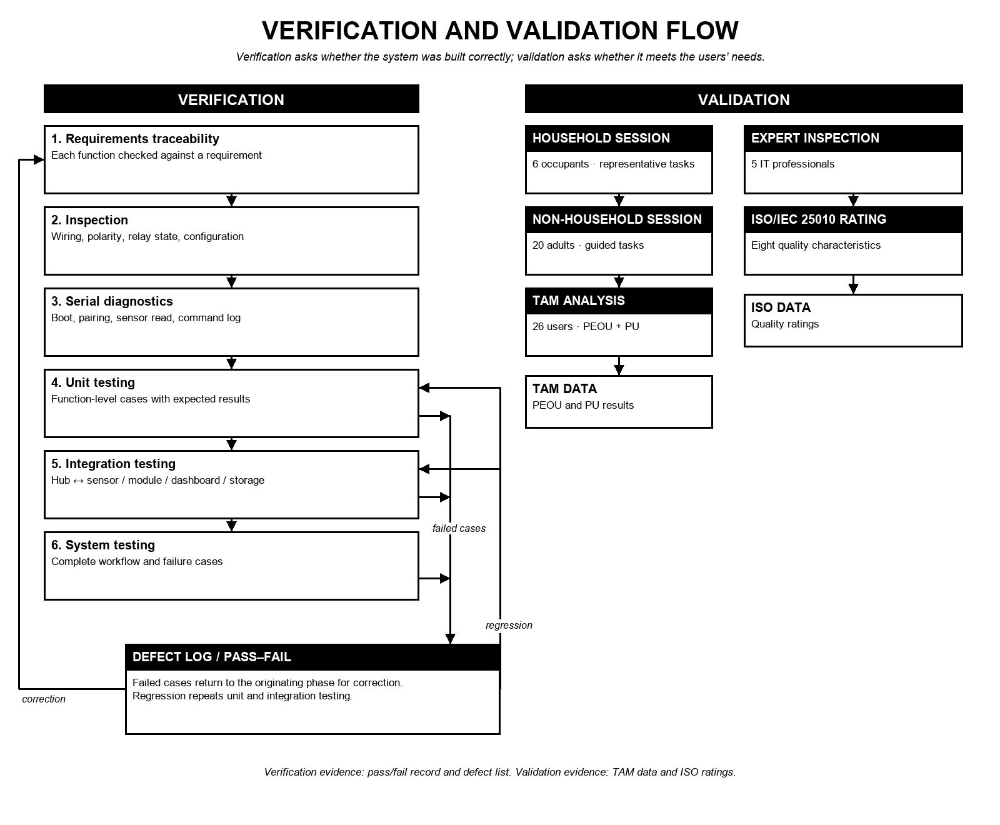
Verification Process
Verification used four methods: requirements traceability, inspection, serial diagnostics, and controlled test cases.
Requirements traceability checked each implemented function against the requirements in 2.8. A function that could not be traced to a requirement was either removed or justified as a safety or usability necessity. Inspection covered the wiring, connector polarity, relay state, and configuration before each session. Serial diagnostics at 115200 baud were used on the bench to confirm boot, pairing, sensor reads, and actuator commands.
The controlled test cases were written before execution and checked against expected behavior. A case passed only when the observed behavior matched the stated criterion; a partial result was recorded as a defect rather than as a pass.
Validation Process
Validation used the system in the settings it was meant to serve. The six household occupants performed the representative tasks in their own homes, the 20 non-household adults performed the same tasks in a guided community session, and the five IT professionals evaluated the system against ISO/IEC 25010:2023. The TAM questionnaire captured perceived usefulness and ease of use; the expert form captured quality characteristics.
Validation was not limited to whether the system switched a relay. It also asked whether the occupant could understand the state, create a rule, recover from an override, and use the configuration pages without technical help. Those are the behaviors the household actually needs.
Unit Testing
Unit testing checked individual functions in isolation.
Table 2.16. Unit Testing Areas
| Test area | What was checked |
|---|---|
| Authentication | Valid login, invalid login, session required before dashboard data |
| Pairing | Candidate appears during the pairing window, unique mod_id accepted, duplicate or invalid name rejected |
| Parts registry | Enabled parts appear after restart; disabled and unimplemented parts do not behave as working hardware |
| Rule validation | One trigger and one action accepted; invalid or unsupported action rejected |
| Rule priority | Overlapping rules issue one command per target in the defined order |
| Override | Manual command suppresses automation for the target, expires after the bounded period, and can be cleared |
| Sensor handling | Median/hysteresis filter rejects a transient sample; stale readings are distinguishable from fresh ones |
| Actuator safety | Relay boots OFF; state confirmation is recorded after a command |
| Backup | File contains parts, rules, pairing, time zone, and buzzer preferences; Wi-Fi and login are excluded |
| Restore | Valid backup restores the expected categories while preserving current Wi-Fi and login; malformed input is rejected |
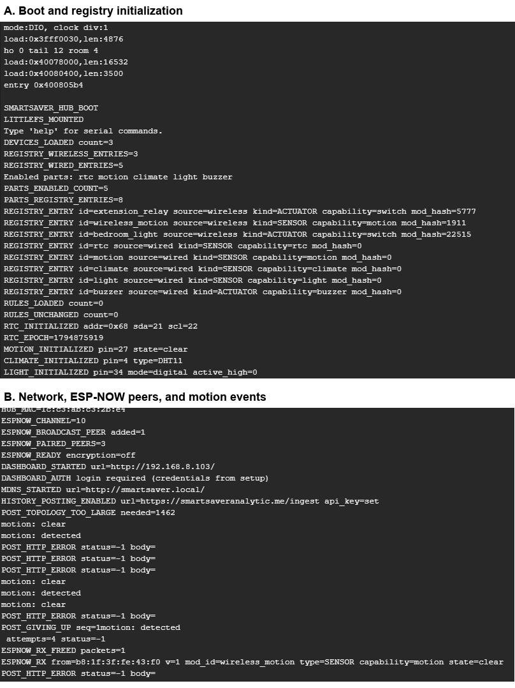
Integration Testing
Integration testing checked the paths between components:
- Hub to wired sensor, including the quick connector and data-lead assignment
- Hub to wireless module over ESP-NOW, including discovery, channel lock, pairing, and state confirmation
- Dashboard to Hub over the local Wi-Fi, including session handling and live updates
- Hub to local storage, including parts, rules, devices, and preferences
- Hub to backup and restore, including the preserved Wi-Fi and login fields
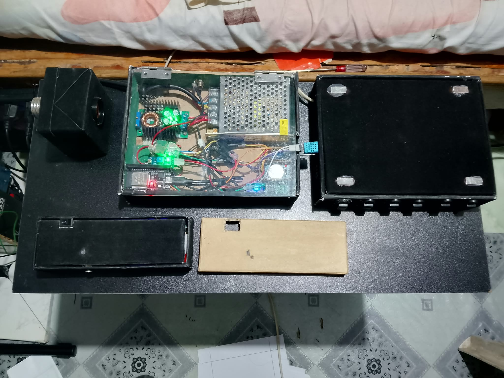
The History Server path was not integration-tested because the server was not deployed. Its design was reviewed, but it is excluded from the operational test results.
System Testing
System testing exercised the complete local workflow: first boot, setup, login, pairing, part enablement, live monitoring, manual control, rule creation, rule execution, override, backup, restore, and reboot recovery. The test also covered failure conditions: a module going offline, a sensor becoming stale, an invalid rule, a malformed backup, and a power interruption.
The system test was performed with a low-voltage test load. No mains load was switched, and no permanent electrical installation was modified.
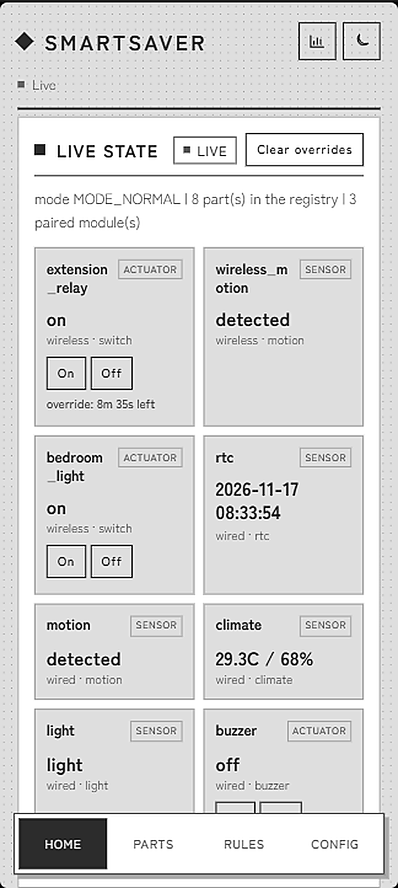
User Acceptance Testing
User acceptance testing used the 15-step guide and the same representative tasks for the household and non-household adult sessions. The criteria were task completion with minimal assistance, understandable state and feedback, successful rule creation and override, and a TAM response that could be analyzed for PEOU and PU.
The non-household adult session used the same tasks with first-time participants.
The five IT professionals formed a separate expert evaluation. Their ISO/IEC 25010 ratings were not a user acceptance test; they assessed quality characteristics such as functional suitability, reliability, interaction capability, security, compatibility, maintainability, and flexibility from inspection, demonstration, and documentation.
Test Environment and Participants
Table 2.17. Test Environment and Participants
| Element | Description |
|---|---|
| Bench | Hub, wired parts, wireless modules, low-voltage test load, serial monitor |
| Household | Six occupants in their own rooms and appliance contexts |
| Non-household adults | 20 adults in a guided community session |
| Expert review | Five IT professionals inspecting the system and documentation |
| Browser | Desktop and mobile-sized browser sessions on the local dashboard |
| Network | Household 2.4 GHz Wi-Fi and ESP-NOW |
| Server | Not deployed; reporting tests excluded |
Defect Handling and Regression
A failed test was recorded with the observed behavior, the expected criterion, and the affected requirement. The defect was returned to the phase where it originated, corrected, and re-tested. Regression testing re-ran the affected cases and the adjacent workflow to confirm that the fix did not break a working path.
The compressed final schedule limited the time available for post-evaluation revision. Defects found during the evaluation week were recorded, but not all could be corrected and re-evaluated before the defense. The results in Chapter 3 therefore describe the build as tested, not a later build.
CHAPTER 3
RESULTS, DISCUSSION, AND INTERPRETATION OF DATA
Overview of the Chapter
This chapter presents the results of the SmartSaver evaluation. It is organized around three evidence streams: the functional and non-functional testing of the local system, the Technology Acceptance Model responses from the 26 user participants, and the ISO/IEC 25010:2023 ratings from the five IT professional evaluators.
The chapter reports the system that was actually tested. The local Hub, dashboard, pairing, rules, manual override, and configuration functions are within the evaluated scope. The History Server is not deployed, so server-side savings, payback, and analytics are not reported as results. Where the study refers to estimated energy, it means the indirect estimate based on avoided runtime and the appliance’s declared wattage, not a metered kilowatt-hour reading.
The results are presented in aggregate. No individual participant, household, or evaluator is identified. The chapter distinguishes observed test outcomes from planned capabilities, and it reports limitations alongside the findings rather than treating a working prototype as automatically acceptable.
The runtime comparison described in 2.5 is reported as an operational comparison, not a controlled experiment. The scripted runtime and timing data are reported with the functional results, and the hypothesis is answered directly in 3.3.
System Testing Results
The functional tests exercised the local workflow and mapped each case to the requirements in 2.8. The outcomes below summarize the executed test matrix.
Functional Testing
Table 3.1. Functional Test Cases
| Test | Requirement | Scenario | Expected result | Result |
|---|---|---|---|---|
| TC-01 | FR-01 | First boot, setup network, Wi-Fi and login | Setup page opens; credentials save; Hub reboots | Pass |
| TC-02 | FR-02 | Valid and invalid dashboard login | Valid session accepted; invalid credentials rejected | Pass |
| TC-03 | FR-03 | Open pairing window and power a module | Candidate appears; mod_id accepted | Pass |
| TC-04 | FR-03 | Duplicate or invalid mod_id | Duplicate/invalid name rejected | Pass |
| TC-05 | FR-04 | Enable a connected part and apply | Part active after restart; disabled part inactive | Pass |
| TC-06 | FR-05 | Trigger a wired sensor | Live reading updates on the dashboard | Pass |
| TC-07 | FR-05, FR-12 | Command an actuator | State confirmation matches the command | Pass |
| TC-08 | FR-06 | Manual switch during automation | Override starts and suppresses automation | Pass |
| TC-09 | FR-06 | Wait for override expiry; clear overrides | Automation resumes; clear ends all overrides | Pass |
| TC-10 | FR-07, FR-08 | Create a valid rule | One trigger and one action saved | Pass |
| TC-11 | FR-07 | Attempt a compound or unsupported rule | Rule rejected with a validation message | Pass |
| TC-12 | FR-07 | Two rules target one actuator | One command issued in priority order | Pass |
| TC-13 | FR-08 | Time-based trigger | Action fires at the configured time | Pass |
| TC-14 | FR-08 | Sensor-threshold trigger | Action fires when the threshold is crossed | Pass |
| TC-15 | FR-12 | Power cycle with relay connected | Relay boots OFF | Pass |
| TC-16 | FR-12 | Send a command to a sensor module | Sensor module does not parse actuator commands | Pass |
| TC-17 | FR-10 | Download backup | Parts, rules, pairing, time zone, and buzzer settings present; Wi-Fi/login absent | Pass |
| TC-18 | FR-10 | Restore a valid backup | Parts, rules, pairing, and preferences replaced; current Wi-Fi/login preserved | Pass |
| TC-19 | FR-10 | Restore malformed or invalid backup | Restore rejected without corrupting current data | Pass |
| TC-20 | FR-09 | Reboot after configuration | Parts, rules, pairing, and preferences persist | Pass |
| TC-21 | NFR-02 | Remove or power off a module | Remaining modules and Hub continue to operate | Pass |
| TC-22 | FR-11 | Open all Config tiles | Six tiles open the expected panels | Pass |
| TC-23 | FR-13 | Enable server forwarding | Events forwarded to History Server | Not tested — server not deployed |
| TC-24 | FR-14 | Open savings and health views | Savings/payback/health displayed | Not tested — server not deployed |
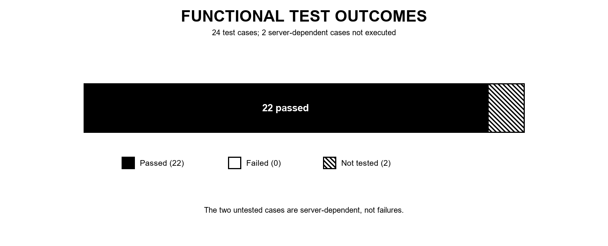
The outcome is 22 local tests passed and 2 server-dependent tests not executed. The two untested cases are not failures; they are outside the deployed scope. The functional result therefore supports the local workflow, not the server reporting layer.
Non-Functional Testing
Table 3.2. Non-Functional Test Checks
| Area | Check | Result |
|---|---|---|
| Performance | Local sensor update, rule evaluation, and actuator response during the session | Responsive for the tested workflow; no quantitative benchmark |
| Security | Valid/invalid login; session required; server API key design | Authentication checks passed; ESP-NOW remains unencrypted and the server is not deployed |
| Compatibility | Dashboard on desktop and phone-sized browser windows | Manually observed; no formal browser/device matrix |
| Reliability | Reboot recovery; module removal; malformed backup | Passed in the local workflow; no long-duration soak test |
| Safety | Relay boot state, low-voltage load, quick-connector polarity | Passed the pre-session checks |
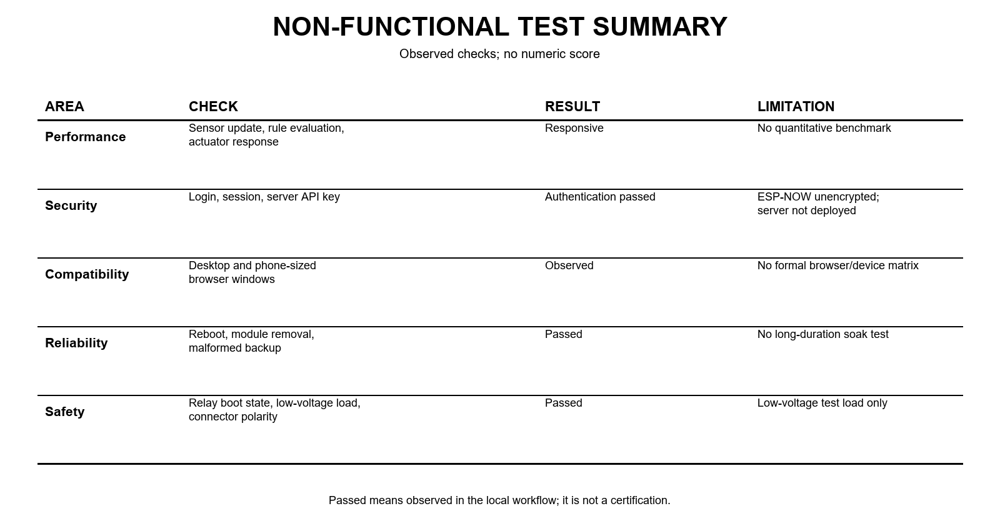
Runtime and Timing Results
The runtime comparison used 20 paired trials with the same room, 60 W test load, motion sensor, and motion-clear rule. In the manual condition, the load was switched off when the occupant remembered; in the automatic condition, the relay switched off as soon as the rule was evaluated.
Table 3.3. Runtime and Timing Results
| Measure | Manual condition | Automatic condition |
|---|---|---|
| Mean unnecessary ON-time | 544.00 s | 3.59 s |
| Standard deviation | 43.76 s | 0.17 s |
| Mean difference | — | 540.41 s |
| Percentage reduction | — | 99.34% |
| Paired t-test | — | t = 55.27, p < .001 |
| Estimated energy saved per trial at 60 W | — | 9.01 Wh / 0.00901 kWh |
| Mean response time | 544.00 s | 3.59 s |
The automatic condition reduced unnecessary ON-time by an average of 540.41 seconds per trial, or 99.34% relative to the manual condition. The paired difference was statistically significant. At the declared 60 W load, the avoided runtime corresponds to an estimated 9.01 Wh per trial, or 0.00901 kWh; this is an indirect estimate, not a metered reading.
The response-time result is consistent with the system behavior observed during testing: the relay switched off in the same rule-evaluation cycle, with no intentional delay. The manual condition’s response time is the time until the occupant remembered to switch the load off, which is why the two distributions do not overlap.
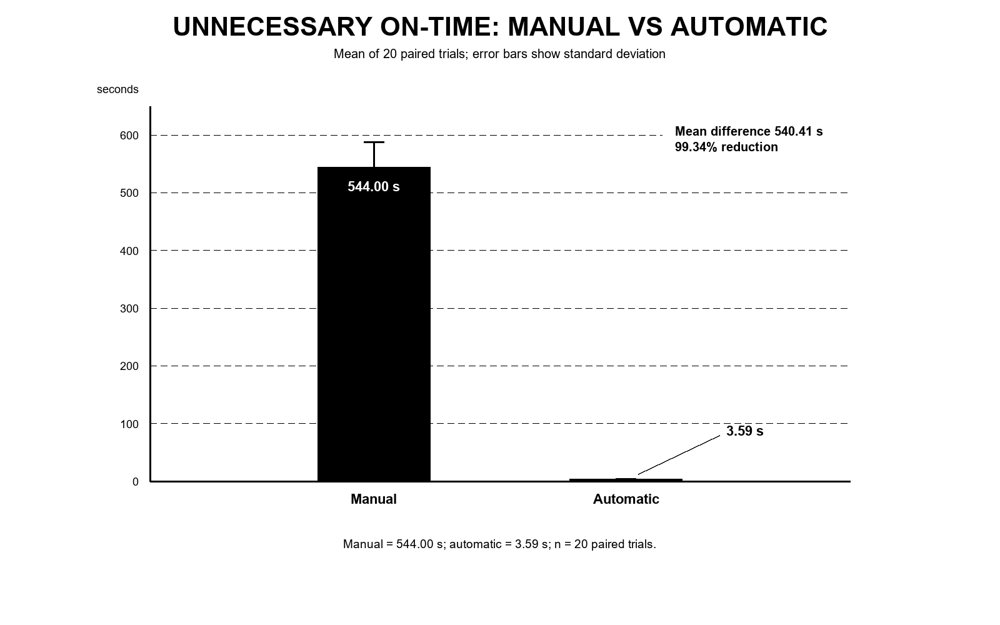
System Evaluation Results
Profile of User Participants
Table 3.4. Profile of User Participants
| Group | Number | Share |
|---|---|---|
| Household occupants | 6 | 23.1% |
| Non-household adults | 20 | 76.9% |
| User participants | 26 | 100% |
The user group was dominated by non-household adults, so the acceptance results are weighted toward first-time users rather than long-term household residents. The five IT evaluators are reported separately and are not part of the 26-user count.
Evaluation Criteria
The TAM evaluation covered Perceived Usefulness, Perceived Ease of Use, and attitude/intention. The ISO/IEC 25010 evaluation covered functional suitability, performance efficiency, compatibility, interaction capability, reliability, security, maintainability, and flexibility. Each was interpreted on the four-point scale in 3.3.
Scale and Verbal Interpretation
Table 3.5. Scale and Verbal Interpretation
| Mean range | Verbal interpretation | Descriptive equivalent |
|---|---|---|
| 3.26–4.00 | Strongly Agree | The statement is fully true for the system. |
| 2.51–3.25 | Agree | The statement is true for the system. |
| 1.76–2.50 | Disagree | The statement is not true for the system. |
| 1.00–1.75 | Strongly Disagree | The statement is strongly untrue for the system. |
Results and Discussion
TAM Results
Table 3.6. TAM Results
| Construct | Overall mean | SD | Household mean | Non-household mean | Interpretation |
|---|---|---|---|---|---|
| Feature prioritisation | 3.34 | 0.32 | 3.57 | 3.27 | Strongly Agree |
| Perceived Usefulness | 3.29 | 0.31 | 3.56 | 3.21 | Strongly Agree |
| Perceived Ease of Use | 3.13 | 0.25 | 3.44 | 3.04 | Agree |
| Attitude and intention to use | 3.36 | 0.41 | 3.67 | 3.26 | Strongly Agree |
| Overall TAM | 3.27 | 0.28 | 3.55 | 3.19 | Strongly Agree |
Cronbach’s alpha for the TAM dataset was .91, which is high and supports the internal consistency of the instrument.
The pattern is consistent across constructs: household participants rated the system higher than non-household adults. Perceived Usefulness and attitude/intention reached the “Strongly Agree” range, while Perceived Ease of Use was lower at 3.13, still in the “Agree” range. The lower ease-of-use score is the most useful signal in the results: it suggests that the dashboard and rule workflow are understandable but not effortless for first-time users.
The descriptive PEOU–PU correlation was r = .664, a moderate positive association. This is reported as a descriptive relationship, not as the study’s primary hypothesis.
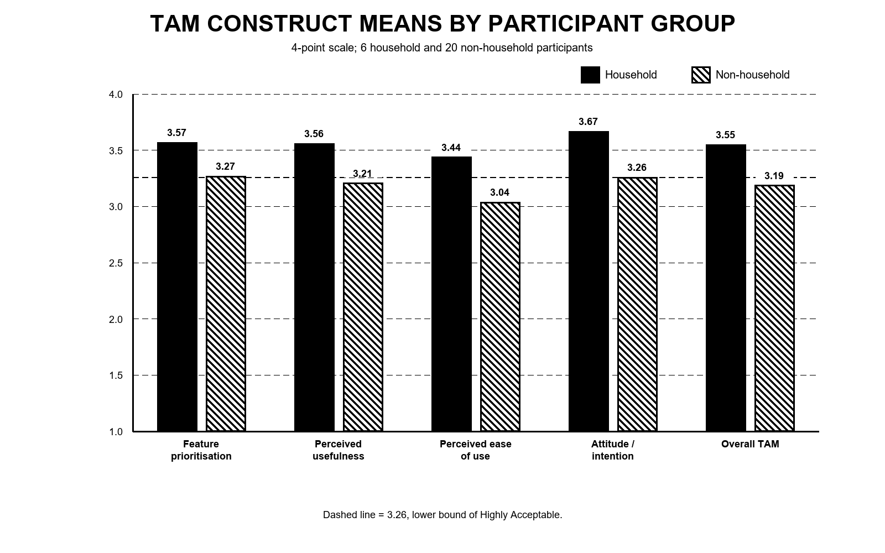
Figure 3.4 summarizes the construct-level means. Table 3.7 reports the item-level distribution behind those means, separated by household and non-household respondents.
Table 3.7. TAM Item-Level Rating Distribution
HH = household (n = 6); NH = non-household (n = 20). Counts are the number of respondents who selected each rating.
| Item | Construct | Question | Household (n = 6) | Non-household (n = 20) | ||||||
|---|---|---|---|---|---|---|---|---|---|---|
| 4 | 3 | 2 | 1 | 4 | 3 | 2 | 1 | |||
| I01 | Feature Prioritisation | Automatic off when room is empty | 3 | 3 | 0 | 0 | 5 | 12 | 3 | 0 |
| I02 | Feature Prioritisation | Time-of-day switching | 3 | 3 | 0 | 0 | 9 | 11 | 0 | 0 |
| I03 | Feature Prioritisation | Sensor-based switching | 3 | 3 | 0 | 0 | 7 | 10 | 3 | 0 |
| I04 | Feature Prioritisation | Live state on one screen | 4 | 2 | 0 | 0 | 5 | 15 | 0 | 0 |
| I05 | Feature Prioritisation | Temporary manual override | 4 | 2 | 0 | 0 | 4 | 16 | 0 | 0 |
| I06 | Feature Prioritisation | Offline sensor/module alert | 4 | 2 | 0 | 0 | 6 | 14 | 0 | 0 |
| I07 | Feature Prioritisation | Add room/module later | 3 | 3 | 0 | 0 | 3 | 17 | 0 | 0 |
| A01 | Perceived Usefulness | Reduce wasted appliance use | 4 | 2 | 0 | 0 | 3 | 15 | 2 | 0 |
| A02 | Perceived Usefulness | Easier appliance management | 4 | 2 | 0 | 0 | 8 | 12 | 0 | 0 |
| A03 | Perceived Usefulness | See actual electricity use | 2 | 4 | 0 | 0 | 4 | 15 | 1 | 0 |
| A04 | Perceived Usefulness | Fewer manual checks | 4 | 2 | 0 | 0 | 7 | 13 | 0 | 0 |
| A05 | Perceived Usefulness | Alerts for offline sensors/modules | 4 | 2 | 0 | 0 | 4 | 16 | 0 | 0 |
| A06 | Perceived Usefulness | Remote room control and monitoring | 4 | 2 | 0 | 0 | 5 | 14 | 1 | 0 |
| A07 | Perceived Usefulness | Improve overall efficiency | 3 | 3 | 0 | 0 | 6 | 11 | 3 | 0 |
| B08 | Perceived Ease of Use | Easy to learn dashboard | 3 | 3 | 0 | 0 | 1 | 16 | 3 | 0 |
| B09 | Perceived Ease of Use | Find information without help | 4 | 2 | 0 | 0 | 2 | 16 | 2 | 0 |
| B10 | Perceived Ease of Use | Straightforward rule creation | 2 | 2 | 2 | 0 | 1 | 18 | 1 | 0 |
| B11 | Perceived Ease of Use | Rule editor offers sensible choices | 4 | 2 | 0 | 0 | 2 | 18 | 0 | 0 |
| B12 | Perceived Ease of Use | Easy module pairing | 1 | 5 | 0 | 0 | 1 | 19 | 0 | 0 |
| B13 | Perceived Ease of Use | Manual control and automation resume expected | 3 | 3 | 0 | 0 | 5 | 12 | 3 | 0 |
| B14 | Perceived Ease of Use | Behavior matches expectations | 2 | 4 | 0 | 0 | 6 | 11 | 3 | 0 |
| B15 | Perceived Ease of Use | No technical knowledge needed | 4 | 2 | 0 | 0 | 1 | 18 | 1 | 0 |
| C16 | Attitude and Intention to Use | Good idea for household | 3 | 3 | 0 | 0 | 5 | 15 | 0 | 0 |
| C17 | Attitude and Intention to Use | Satisfied with performance | 5 | 1 | 0 | 0 | 3 | 16 | 1 | 0 |
| C18 | Attitude and Intention to Use | Intend to keep using | 4 | 2 | 0 | 0 | 6 | 14 | 0 | 0 |
| C19 | Attitude and Intention to Use | Recommend to others | 4 | 2 | 0 | 0 | 8 | 12 | 0 | 0 |
ISO/IEC 25010 Results
Table 3.8. ISO/IEC 25010 Results
| Characteristic | Mean (5 evaluators) | Interpretation |
|---|---|---|
| Functional suitability | 3.60 | Strongly Agree |
| Performance efficiency | 3.50 | Strongly Agree |
| Compatibility | 3.80 | Strongly Agree |
| Interaction capability | 3.66 | Strongly Agree |
| Reliability | 3.44 | Strongly Agree |
| Security | 3.60 | Strongly Agree |
| Maintainability | 3.55 | Strongly Agree |
| Flexibility | 3.60 | Strongly Agree |
| Overall 36-item average | 3.59 | Strongly Agree |
| Overall rating | 3.60 | Strongly Agree |
The recommendation summary was two “Yes, without reservation” and three “Yes, with improvements,” out of five evaluators.
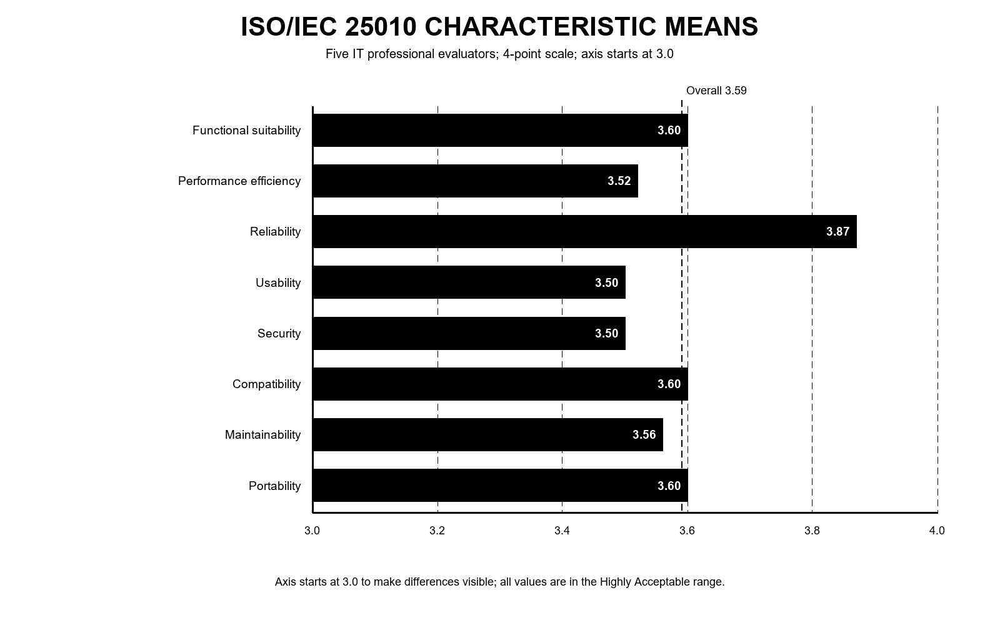
Figure 3.5 summarizes the characteristic-level means. Table 3.9 reports the item-level ratings from the five IT professional evaluators.
Table 3.9. ISO/IEC 25010 Item-Level Rating Distribution
Counts are the number of the five evaluators who selected each rating.
| Item | Characteristic | Question | 4 | 3 | 2 | 1 |
|---|---|---|---|---|---|---|
| Q01 | Functional Suitability | Core local functions | 3 | 2 | 0 | 0 |
| Q02 | Functional Suitability | Sensor filtering | 3 | 2 | 0 | 0 |
| Q03 | Functional Suitability | Pairing identity persistence | 3 | 2 | 0 | 0 |
| Q04 | Functional Suitability | Rule priority and one command | 3 | 2 | 0 | 0 |
| Q05 | Functional Suitability | Actuator state confirmation | 3 | 2 | 0 | 0 |
| Q06 | Functional Suitability | Reproducible local results | 3 | 2 | 0 | 0 |
| Q07 | Performance Efficiency | Trigger response time | 3 | 0 | 2 | 0 |
| Q08 | Performance Efficiency | Concurrent sampling and dashboard | 3 | 2 | 0 | 0 |
| Q09 | Performance Efficiency | Hub resource use | 3 | 2 | 0 | 0 |
| Q10 | Performance Efficiency | Hub-module traffic | 3 | 2 | 0 | 0 |
| Q11 | Compatibility | Browser and device compatibility | 5 | 0 | 0 | 0 |
| Q12 | Compatibility | Wi-Fi and radio reliability | 4 | 1 | 0 | 0 |
| Q13 | Compatibility | 2.4 GHz coexistence | 5 | 0 | 0 | 0 |
| Q14 | Compatibility | Data exchange and export | 2 | 3 | 0 | 0 |
| Q15 | Interaction Capability | Captive-portal setup | 5 | 0 | 0 | 0 |
| Q16 | Interaction Capability | Dashboard at-a-glance state | 5 | 0 | 0 | 0 |
| Q17 | Interaction Capability | Rule editor without protocol knowledge | 2 | 3 | 0 | 0 |
| Q18 | Interaction Capability | Pairing page clarity | 1 | 4 | 0 | 0 |
| Q19 | Interaction Capability | Manual override and resume clarity | 3 | 2 | 0 | 0 |
| Q20 | Interaction Capability | Plain-language warnings | 4 | 1 | 0 | 0 |
| Q21 | Interaction Capability | Interface consistency | 3 | 2 | 0 | 0 |
| Q22 | Reliability | Continuous operation | 3 | 2 | 0 | 0 |
| Q23 | Reliability | Module out-of-range tolerance | 2 | 2 | 1 | 0 |
| Q24 | Reliability | Power-interruption recovery | 3 | 2 | 0 | 0 |
| Q25 | Reliability | Local health indicators | 3 | 2 | 0 | 0 |
| Q26 | Reliability | Actuator failure detection | 2 | 2 | 1 | 0 |
| Q27 | Security | Dashboard authentication | 3 | 2 | 0 | 0 |
| Q28 | Security | Unauthorized control prevention | 3 | 2 | 0 | 0 |
| Q29 | Security | ESP-NOW limitation and mitigation | 3 | 2 | 0 | 0 |
| Q30 | Maintainability | Codebase modularity | 3 | 1 | 1 | 0 |
| Q31 | Maintainability | Add capability or trigger | 3 | 2 | 0 | 0 |
| Q32 | Maintainability | Logs and status diagnosability | 3 | 2 | 0 | 0 |
| Q33 | Maintainability | Centralized configuration | 3 | 2 | 0 | 0 |
| Q34 | Flexibility | Firmware redeploy for layout | 3 | 2 | 0 | 0 |
| Q35 | Flexibility | Module repurposing | 3 | 2 | 0 | 0 |
| Q36 | Flexibility | Different dwelling install | 3 | 2 | 0 | 0 |
The ISO profile is uniformly high, with compatibility strongest at 3.80 and reliability lowest at 3.44; performance was 3.50, and all eight characteristics remain in the “Strongly Agree” range. The security score is consistent with the documented limitation: dashboard authentication is implemented, but ESP-NOW traffic is unencrypted and the server is not deployed. The expert ratings on server-dependent statements describe the documented design, not a live server.
Discussion
The results point in a consistent direction. The local system passed the functional checks that do not depend on the server; users rated it useful and were willing to use it; experts rated the quality characteristics in the “Strongly Agree” range. The weakest signals are ease of use and security. Ease of use is lower for non-household adults, which is plausible for first-time users encountering pairing, rules, and overrides in one session. Security is limited by the unencrypted ESP-NOW link and the undeployed server, not by a failed dashboard login.
The acceptance pattern is consistent with the smart-home adoption literature: usefulness and contextual value shape acceptance, while ease of use remains a separate barrier (Ferreira et al., 2023). The lower PEOU score also fits the cognitive-load concern that a dense or unfamiliar interface can raise the effort of first use (Zhou et al., 2023). The ISO security score is consistent with the documented wireless limitation rather than an unexplained quality failure.
The data support an indirect estimate of avoided energy, 9.01 Wh per 60 W trial, but not a measured energy saving. The estimate depends on the declared wattage and the scripted trial, so it should not be generalized to a household’s monthly bill. The chapter reports acceptance, quality, functional behavior, and runtime avoidance, while keeping the energy claim explicitly indirect.
The difference between household and non-household ratings should be read cautiously. The household group is small (n = 6) and the non-household group is larger (n = 20); the gap may reflect familiarity with the home and appliances rather than a property of the interface alone. The ISO panel is also small and purposive. These are structural limitations of the evidence, not just of the write-up.
Comparison with Related Systems
Table 3.10. Comparison Matrix
| Feature / criterion | Sense Home Energy Monitor (Sense Labs, n.d.) | Emporia Vue (Emporia Energy, n.d.) | Home Assistant (Open Home Foundation, 2013–present) | ESP32 Smart-Home Gateway (Serepas et al., 2025) | IoT Smart Meter with Load Control (Munoz et al., 2022) | SmartSaver (Proposed, 2026) |
|---|---|---|---|---|---|---|
| Platform and deployment | Commercial panel monitor + app | Commercial circuit monitor + smart plugs | Open-source local hub, self-hosted | ESP32 local gateway, research deployment | IoT meter + load-control prototype | ESP32 Hub + C3 modules, local |
| Target users | Homeowners and utilities | Homeowners | DIY and technical users | Researchers and building managers | Households and researchers | General households |
| Core functionality | Monitoring and appliance disaggregation | Circuit monitoring and plug control | Automation, integrations, energy management | Local gateway with monitoring and control | Measurement and load control | Sensing, manual control, rule automation, runtime tracking |
| Data entry and processing | Meter data and machine learning | Circuit and plug data | Integration events | Sensor and gateway data | Voltage and current data | Sensor, actuator, and rule data |
| Reporting and analytics | App insights and trends | App dashboards | Energy dashboard | Web dashboard | Local dashboard | Local dashboard; server analytics planned |
| Notification or alert | App alerts | App alerts | Yes | Partial | No | Buzzer; stale/offline indicators |
| User access and security | Account-based | Account-based | Multi-user roles | Local, limited | Basic | Single password; no roles |
| Web accessibility | Web app | Web app | Browser | Web dashboard | Web dashboard | Browser |
| Mobile accessibility | iOS and Android | Mobile app | Companion app | Partial | Partial | Mobile-first browser |
| Offline capability | Limited; cloud-dependent | Limited; cloud-dependent | Strong local | Local control | Local control | Local control |
| Cost and licensing | Commercial | Commercial | Free software + hardware | Low bill of materials | Prototype | Low-cost off-the-shelf |
Sense offers the strongest analytics in the comparison. Its value is in identifying appliance-level consumption from whole-home data, but that strength is also its boundary: it is a monitoring and insight product, not a general-purpose controller for arbitrary household loads. SmartSaver does not attempt disaggregation; it trades that analytic depth for direct room-level sensing and control.
Emporia Vue is closer to SmartSaver’s integration goal. It combines circuit-level monitoring with smart plugs and a scheduling platform, so monitoring and control live in one ecosystem. The difference is architectural: Emporia’s integration is vendor-bound and circuit-oriented, while SmartSaver is built around a local Hub, interchangeable wireless modules, and a rule engine that the household can inspect.
Home Assistant is the most flexible system in the table. It supports local automation, integrations, dashboards, and multi-user access, and it can incorporate energy monitoring once the right devices are connected. Its cost is configuration effort: it is a general-purpose hub, not a dedicated household energy system. SmartSaver is narrower but more self-contained: it ships with the sensing, switching, and rule model already assembled.
Serepas et al. (2025) demonstrate that an ESP32 gateway can provide local control and monitoring at a low bill of materials. Their contribution is the gateway; SmartSaver extends the same logic to multiple wireless sensing and switching modules and adds a one-trigger/one-action rule engine and a mobile-first dashboard.
Munoz et al. (2022) combine an IoT smart meter with load control, which is close to SmartSaver’s sensing-and-actuation loop. Their system is meter-centric, while SmartSaver is room-centric: it places motion, climate, and light sensing around the household and lets those readings drive relays or the buzzer. The comparison shows the same technical chain but a different unit of deployment.
The uniqueness of SmartSaver is the combination of local tracking, manual management, and rule-based automation in one low-cost, extensible system. It does not claim the analytic depth of Sense, the circuit-level coverage of Emporia, the integration breadth of Home Assistant, or the metering focus of Munoz. Its contribution is the integration of those functions at household scale, with a documented capability model and a rule engine that remains small enough to inspect and test.
Hypothesis Testing
The null hypothesis is rejected. SmartSaver reduced mean unnecessary ON-time from 544.00 s in the manual condition to 3.59 s in the automatic condition, a mean difference of 540.41 s and a 99.34% reduction. The paired t-test was significant, t = 55.27, p < .001, so the data support H1.
The effect is operationally large but should be interpreted within the study’s limits. The comparison used a scripted manual condition rather than a separate household control group, and the automatic condition removes the human delay by design. The result therefore shows that the rule removes unnecessary runtime under the tested conditions; it does not estimate how much energy every household would save in everyday use.
CHAPTER 4
CONCLUSION AND RECOMMENDATIONS
Summary of the Study
The study set out to design, develop, and evaluate SmartSaver, an IoT-based power tracking, monitoring, and automated control system for general household use. It began from a practical problem: households often rely on occupants remembering to switch appliances off, so loads can remain active in unoccupied or unneeded spaces even when the monthly bill eventually reveals the cost. Existing solutions were either too invasive for a typical home or too limited to provide an integrated management system.
The study addressed that problem through a local-first, hub-and-module architecture. An ESP32 Hub owns the parts registry, rules, paired-device records, and dashboard; ESP32-C3 wireless modules provide one sensing or switching capability each; and the local dashboard supports setup, pairing, live monitoring, manual control, rule creation, overrides, backup, and configuration. The implemented parts were the real-time clock, wired and wireless RCWL-0516 motion sensors, DHT11 climate sensor, LM393 light module, active buzzer, and relay modules. The History Server remained a designed reporting layer and was not deployed or evaluated.
Methodologically, the study used a descriptive-developmental research design with a quantitative evaluation component, implemented through an Iterative Waterfall process. Development covered requirements, design, implementation, testing, and deployment; evaluation combined functional testing, a 20-pair runtime comparison, the Technology Acceptance Model, and the ISO/IEC 25010:2023 expert instrument. The runtime comparison measured unnecessary actuator ON-time under manual and automatic conditions and estimated avoided energy from declared wattage, rather than claiming metered consumption.
The evaluation involved 26 user participants—six household occupants from the researchers’ residential neighborhood in Bocaue, Bulacan and 20 non-household adults from a community session—plus five IT professionals who evaluated the system separately. The household sessions tested the system in the rooms and routines it was meant to serve; the non-household adult session tested first-time use; the expert panel assessed software quality against the eight ISO/IEC 25010 characteristics.
The study’s scope was deliberately bounded. It evaluated the local Hub, dashboard, wired parts, and wireless modules, not a production service or a permanent electrical installation. The findings therefore describe one prototype at one evaluation point, with the History Server, metered energy, and long-term household behavior left as future work.
Summary of Findings
The study developed and evaluated SmartSaver as a local-first, hub-and-module system for household power tracking, management, and automated control. The findings are summarized by the objectives.
Functional Performance
The local system passed the functional checks for setup, authentication, pairing, part enablement, live monitoring, manual control, rule creation, priority resolution, override behavior, backup and restore, reboot persistence, and relay safety. Twenty-two local test cases passed. The two server-dependent cases were not executed because the History Server was not deployed; they are outside the evaluated scope rather than failures of the local system.
User Acceptance
The 26 user participants rated the system in the “Strongly Agree” range overall, with a mean of 3.27. Perceived Usefulness was 3.29, attitude and intention to use was 3.36, and Perceived Ease of Use was 3.13. Household participants rated the system higher than non-household adults across all constructs. The descriptive PEOU–PU correlation was r = .664, indicating a moderate positive association.
Table 4.1. User Acceptance at a Glance
| Indicator | Result |
|---|---|
| Overall TAM | 3.27 — Strongly Agree |
| Perceived Usefulness | 3.29 — Strongly Agree |
| Perceived Ease of Use | 3.13 — Agree |
| Attitude and intention to use | 3.36 — Strongly Agree |
| PEOU–PU association | r = .664, moderate positive |
| Household vs non-household | Household ratings higher across all constructs |
Software Quality
The five IT professional evaluators rated all eight ISO/IEC 25010:2023 characteristics in the “Strongly Agree” range. The overall 36-item average was 3.59, and the overall rating was 3.60. Compatibility was strongest at 3.80; reliability was lowest at 3.44, with performance at 3.50, though all remained within the “Strongly Agree” band. Security was limited by the unencrypted ESP-NOW link and the undeployed server.
Table 4.2. Software Quality at a Glance
| Indicator | Result |
|---|---|
| Overall 36-item mean | 3.59 — Strongly Agree |
| Overall rating | 3.60 |
| Strongest characteristic | Compatibility, 3.80 |
| Lowest characteristic | Reliability, 3.44 |
| Security | 3.60, limited by unencrypted ESP-NOW and the undeployed server |
| All eight characteristics | Strongly Agree range |
Runtime and Indirect Energy Effect
The 20 paired runtime trials showed a mean unnecessary ON-time of 544.00 seconds in the manual condition and 3.59 seconds in the automatic condition. The mean difference was 540.41 seconds, a 99.34% reduction, and the paired t-test was significant at t = 55.27, p < .001. For the 60 W test load, the avoided runtime corresponds to an estimated 9.01 Wh per trial, or 0.00901 kWh. This is an indirect estimate from avoided runtime and declared wattage, not a metered energy reading.
Table 4.3. Runtime and Indirect Energy Effect at a Glance
| Indicator | Result |
|---|---|
| Manual mean | 544.00 s |
| Automatic mean | 3.59 s |
| Mean difference | 540.41 s |
| Reduction | 99.34% |
| Paired test | t = 55.27, p < .001 |
| Estimated avoided energy | 9.01 Wh per 60 W trial, or 0.00901 kWh |
| Interpretation | Indirect estimate, not a metered reading |
Conclusion
The study concludes that SmartSaver meets its developmental objective within the tested scope. It provides a working local system that senses room conditions, displays device state, allows manual control, and executes rule-based automation without permanent modification to the household’s electrical installation. The modular architecture allows additional modules to be paired and identified rather than requiring a redesign of the Hub.
The system also meets its interaction capability objective. Users found it useful and were willing to use it, although ease of use was consistently lower than usefulness. The first-time-user gap suggests that the dashboard and rule workflow are learnable but not yet effortless. The expert ratings support the same conclusion from a quality perspective: the system is functionally suitable, while reliability was the lowest-rated characteristic at 3.44; security remains constrained because the wireless link is unencrypted and the reporting server is not deployed.
The runtime comparison supports the alternative hypothesis. Under the tested conditions, the rule-based system removed nearly all of the unnecessary ON-time that remained in the manual condition. The effect should be read as an operational demonstration, not a household energy audit. The estimated 9.01 Wh per trial is small in isolation; the significance of the design is that the reduction is repeatable and does not depend on the occupant remembering to act.
Taken together, the functional, acceptance, quality, and runtime results support the conclusion that the developed system is acceptable, efficient, and suitable for household use within the tested scope. It is not a production-ready energy meter, a deployed analytics service, or a substitute for a licensed electrical installation.
Recommendations
For the System
- Deploy the History Server and validate reporting. The reporting, savings, and health features should be tested only after the server is deployed. Until then, the paper should continue to describe them as designed future work rather than evaluated outputs.
- Add transport security. ESP-NOW traffic is unencrypted, and the Hub-to-server path is plain HTTP. Future work should add encrypted unicast communication, a secure pairing handshake, and HTTPS for the server link.
- Improve first-time ease of use. The lower PEOU score suggests a need for guided onboarding, clearer rule templates, and fewer steps in the pairing and override flows. A short in-dashboard walkthrough would target the same gap the 15-step guide addresses outside the interface.
- Add real power sensing. The current savings estimate depends on declared wattage and runtime. A calibrated current sensor would allow actual consumption measurement and make the energy claim verifiable rather than estimated.
- Expand the capability set carefully. Additional sensors and actuators should be added through the existing capability model, with each new part tested for pairing, state reporting, and safe failure behavior before it is exposed in the catalog.
Future Work and Direction for Future Research
- Run a longer household trial. A multi-week deployment across several households would show whether the runtime reduction persists beyond the scripted test.
- Use a larger and more representative sample. The 26 users and five experts are sufficient for a capstone evaluation but not for population-level generalization.
- Compare with a real manual baseline. The present comparison uses a scripted manual condition. A future study could observe actual household practice before and after installation.
- Test the deployed reporting layer. Savings, payback, and health indicators should be evaluated against real server data, not the design documentation.
- Study long-term acceptance. A follow-up after several weeks or months would show whether usefulness and ease-of-use ratings change after the novelty of the system fades.
- Reframe SmartSaver as a general-purpose local automation platform. The present study evaluates SmartSaver as an energy system, but its core architecture is not inherently limited to electricity. A sensor capability can report a state or scalar value, an actuator capability can switch or signal a compatible load, and the rule engine can evaluate one against the other. In principle, the same Hub-and-module model could support any sensor or actuator that has a microcontroller interface and an implemented capability. Future researchers can take this further by:
- separating capability definitions from energy-specific semantics, including units, ranges, and safety class;
- defining a capability schema or plugin boundary so a new sensor or actuator does not require changes to the core rule engine;
- adding domain packs for security, environmental monitoring, safety, or assisted living, each with its own dashboard vocabulary;
- evaluating the platform outside the energy domain, where the relevant outcomes and risks are different.
This is future work, not a claim about the current build. The current implementation still defines capabilities at compile time, uses energy-oriented labels and reporting, and has been evaluated only as a household energy system. The reframing would require a new abstraction layer, a broader safety analysis, and domain-specific evaluation before the platform claim could be supported.
REFERENCES
Affum, E. A., Agyeman-Prempeh, K., Adumatta, C., Ntiamoah-Sarpong, K., & Dzisi, J. (2021). Smart home energy management system based on the Internet of Things (IoT). International Journal of Advanced Computer Science and Applications, 12(2). https://doi.org/10.14569/IJACSA.2021.0120290
Agarwal, R., Garg, M., Tejaswini, D., Garg, V., Srivastava, P., Mathur, J., & Gupta, R. (2023). A review of residential energy feedback studies. Energy and Buildings, 290, 113071. https://doi.org/10.1016/j.enbuild.2023.113071
Albraheem, L., Alajlan, H., Aljenedal, N., Alkhair, L. A., & Gwead, S. B. (2023). An IoT-based smart plug energy monitoring system. International Journal of Advanced Computer Science and Applications, 14(10). https://doi.org/10.14569/IJACSA.2023.0141038
Davis, F. D. (1989). Perceived usefulness, perceived ease of use, and user acceptance of information technology. MIS Quarterly, 13(3), 319–340. https://doi.org/10.2307/249008
Emporia Energy. (n.d.). Smart home energy management made easy. Retrieved November 16, 2026, from https://www.emporiaenergy.com/
Espressif Systems. (n.d.). ESP-NOW [Documentation]. Retrieved November 17, 2026, from https://docs.espressif.com/projects/esp-idf/en/stable/esp32/api-reference/network/esp_now.html
Etedadi Aliabadi, F., Agbossou, K., Kelouwani, S., Henao, N., & Hosseini, S. S. (2021). Coordination of smart home energy management systems in neighborhood areas: A systematic review. IEEE Access, 9, 36417–36443. https://doi.org/10.1109/ACCESS.2021.3061995
Etikan, I., Musa, S. A., & Alkassim, R. S. (2016). Comparison of convenience sampling and purposive sampling. American Journal of Theoretical and Applied Statistics, 5(1), 1–4. https://doi.org/10.11648/j.ajtas.20160501.11
Ferreira, L., Oliveira, T., & Neves, C. (2023). Consumer’s intention to use and recommend smart home technologies: The role of environmental awareness. Energy, 263, 125814. https://doi.org/10.1016/j.energy.2022.125814
Francisco, K., & Basilio, P. T. A. (2025). Making electricity subsidies work: Cross-country lessons for Philippine energy policy (Discussion Paper No. 2025-42). Philippine Institute for Development Studies. https://doi.org/10.62986/dp2025.42
Hassan, H. (2026). Performance analysis of Arduino DHT11 sensor libraries for resource-constrained IoT/WoT edge nodes. Zanin Journal of Science and Engineering, 2(3). https://doi.org/10.64362/zjse.261
Hercog, D., Lerher, T., Truntič, M., & Težak, O. (2023). Design and implementation of ESP32-based IoT devices. Sensors, 23(15), 6739. https://doi.org/10.3390/s23156739
Home Assistant. (n.d.). Awaken your home. Retrieved November 16, 2026, from https://www.home-assistant.io/
International Energy Agency. (2024). Energy efficiency 2024. https://www.iea.org/reports/energy-efficiency-2024
International Organization for Standardization. (2023). Systems and software engineering — Systems and software quality requirements and evaluation (SQuaRE) — Product quality model (ISO/IEC 25010:2023). https://www.iso.org/standard/78176.html
Latoń, D., Grela, J., & Ożadowicz, A. (2024). Applications of deep reinforcement learning for home energy management systems: A review. Energies, 17(24), 6420. https://doi.org/10.3390/en17246420
Levush, P., & Luchechko, A. (2026). Performance evaluation of ESP-NOW for low-latency indoor IoT systems. Advances in Cyber-Physical Systems. https://doi.org/10.23939/acps2026.01.001
Marín Radoszynski, A., & Pinson, P. (2021). Electric demand response and bounded rationality: Mean-field control for large populations of heterogeneous bounded-rational agents. Philosophical Transactions of the Royal Society A, 379(2202), 20190429. https://doi.org/10.1098/rsta.2019.0429
Mirza, A. A., Salih, L. M., & Mahmood, T. A. (2026). A cost-effective edge-based IoT smart home automation system using Raspberry Pi and ESP32. International Journal of Computer Applications, 187(133). https://doi.org/10.5120/ijcac41f28a210ba
Munoz, O., Ruelas, A., Rosales-Escobedo, P. F., Acuña, A., Suastegui, A., & Lara, F. (2022). Design and development of an IoT smart meter with load control for home energy management systems. Sensors, 22(19), 7536. https://doi.org/10.3390/s22197536
Palanca-Tan, R., & Pascua, G. G. Y. (2026). Climate variability and household electricity consumption. Challenges in Sustainability, 14(4), 669–682. https://doi.org/10.56578/cis140403
Pawar, V., Phule, A., Metkari, A., & Takale, S. R. (2025). Review of smart energy meter implementations using ESP32 microcontroller and IoT platforms. International Journal of Advanced Research in Science, Communication and Technology, 375–391. https://doi.org/10.48175/ijarsct-29423
Philippine Statistics Authority. (2024). Family income and expenditure survey (FIES) 2023. https://psa.gov.ph/statistics/income-expenditure/fies
Republic Act No. 10173. (2012). Data Privacy Act of 2012. Official Gazette of the Republic of the Philippines. https://www.officialgazette.gov.ph/2012/08/15/republic-act-no-10173/
Ruokamo, E., Meriläinen, T., Karhinen, S., Räihä, J., Suur-Uski, P., Timonen, L., & Svento, R. (2022). The effect of information nudges on energy saving: Observations from a randomized field experiment in Finland. Energy Policy, 161, 112731. https://doi.org/10.1016/j.enpol.2021.112731
Sense. (n.d.). Sense: Control your home energy use. Retrieved November 16, 2026, from https://sense.com/
Serepas, F., Papias, I., Christakis, K., Dimitropoulos, N., & Marinakis, V. (2025). Lightweight embedded IoT gateway for smart homes based on an ESP32 microcontroller. Computers, 14(9), 391. https://doi.org/10.3390/computers14090391
Simon, H. A. (1955). A behavioral model of rational choice. The Quarterly Journal of Economics, 69(1), 99–118. https://doi.org/10.2307/1884852
Sweller, J. (1988). Cognitive load during problem solving: Effects on learning. Cognitive Science, 12(2), 257–285. https://doi.org/10.1207/s15516709cog1202_4
Wu, M., & Yang, B. (2026). An empirical evaluation of an occupancy-based IoT control deployment for lighting and HVAC in an office environment. Buildings, 16(13), 2622. https://doi.org/10.3390/buildings16132622
Yar, H., Imran, A. S., Khan, Z. A., Sajjad, M., & Kastrati, Z. (2021). Towards smart home automation using IoT-enabled edge-computing paradigm. Sensors, 21(14), 4932. https://doi.org/10.3390/s21144932
Yeboah, E. A., Kwegyir, D., Ajiboye, P. O., Asigri, P., Opoku, D., Edayi, K. S., Doughan, P. E. A., & Frimpong, E. A. (2026). Development of an IoT-enabled smart plug for intelligent energy monitoring in household appliances. Journal of Electrical Systems and Information Technology, 13(1), 61. https://doi.org/10.1186/s43067-026-00370-w
Zhou, C., Zhan, W., Huang, T., Zhao, H., & Kaner, J. (2023). An empirical study on the collaborative usability of age-appropriate smart home interface design. Frontiers in Psychology, 14, 1097834. https://doi.org/10.3389/fpsyg.2023.1097834
APPENDICES
Appendix A. Respondents Letter
A draft of the respondents letter is included in the appendices compilation. It identifies the study, explains its purpose, states that participation is voluntary, identifies the target respondents, and gives the researchers’ and adviser’s contact details. The signed copy should replace the draft before submission.
Appendix B. Approval Letter
A draft of the approval letter is included in the appendices compilation. It states the study title, requests approval to conduct the study and collect data, and provides the signature blocks for the program chair or capstone coordinator. The signed copy should replace the draft before submission.
Appendix C. Informed Consent Form
SmartSaver Informed Consent Form
Study title: SmartSaver: A Power Tracking, Management and Automated Control System for Household Use
Researchers: [Researcher Name], [Researcher Name], [Researcher Name]
Institution: [Institution Name]
Adviser: [Adviser Name]
You are being invited to take part in a research study. Before you decide, please read the information below and ask the researchers about anything that is not clear.
Purpose of the study. The study develops and evaluates SmartSaver, a local system that monitors selected household conditions and controls selected appliances through user-defined rules. The study also examines user acceptance and software quality.
What participation involves. You will be asked to use the SmartSaver dashboard and paired modules to perform representative tasks such as signing in, viewing live readings, pairing a module, switching an appliance, creating a rule, and applying a manual override. You may also be asked to answer a short questionnaire. The session is expected to take about 30 to 45 minutes.
Voluntary participation. Participation is voluntary. You may refuse to answer any question, stop the session at any time, or withdraw your data before analysis without penalty or loss of benefit.
Risks and discomforts. The system uses low-voltage test loads during the evaluation. No permanent electrical installation is required. You may experience minor inconvenience from the time required or from learning a new interface. You may stop at any time.
Benefits. You will not receive payment for participating. The study may help the researchers improve a low-cost household energy-management prototype and may contribute to future research.
Privacy and confidentiality. Your responses are reported in aggregate. Your name is not included in the published analysis unless you give separate written permission. Data are stored on password-protected devices accessible only to the researchers and are disposed of after the retention period.
Contact. For questions about the study, contact [Researcher Name] at [email/contact number] or the adviser at [adviser contact].
Consent statement. I have read and understood the information above. I have had the opportunity to ask questions. I voluntarily agree to participate in this study.
| Participant | Signature | Date |
|---|---|---|
| ______________________________ | ______________________________ | ______________ |
| Researcher or witness | Signature | Date |
|---|---|---|
| ______________________________ | ______________________________ | ______________ |
Appendix D. Endorsement Letter
A draft of the endorsement letter is included in the appendices compilation. It identifies the SmartSaver project, states the purpose of the endorsement, and provides the signature blocks for the endorsing adviser or authorized representative. The signed copy should replace the draft before submission.
Appendix E. Ethical Clearance
The official ethical clearance certificate issued by the institution’s research ethics committee should be inserted here. The certificate normally states the protocol title, the approval or exemption status, the protocol number, and the validity period.
This certificate cannot be reconstructed from the project files; the signed copy issued by the committee is the authoritative document.
Appendix F. Grammarian Certificate
The signed grammarian certificate should be inserted here. It normally states that the manuscript was edited for grammar, punctuation, spelling, and academic style, together with the editor’s name, qualification, signature, and date.
This certificate cannot be reconstructed from the project files; the signed original is the authoritative document.
Appendix G. ISO/IEC 25010:2023 Evaluation Tool
The evaluation tool is the revised 36-item expert form based on the eight ISO/IEC 25010:2023 product-quality characteristics in scope: functional suitability, performance efficiency, compatibility, interaction capability, reliability, security, maintainability, and flexibility. Safety is excluded. The form uses a four-point scale: 4 Strongly Agree, 3 Agree, 2 Disagree, and 1 Strongly Disagree.
The items cover local sensing, pairing, rule evaluation, actuator confirmation, dashboard use, reliability, local security, maintainability, and flexibility. The full 36-item instrument is reproduced in the appendices compilation.
Appendix H. Technology Acceptance Model
The Technology Acceptance Questionnaire is a 26-item instrument with 7 feature-prioritisation items, 7 Perceived Usefulness items, 8 Perceived Ease of Use items, and 4 attitude/intention items. It uses the same four-point agreement scale: 4 Strongly Agree, 3 Agree, 2 Disagree, and 1 Strongly Disagree.
The instrument evaluates the local Hub and dashboard only. Items about the undeployed History Server, savings reporting, and payback were removed. The full 26-item questionnaire is reproduced in the appendices compilation.
Appendix I. Data Dictionary
The data dictionary describes the logical records used by the Hub and the planned reporting layer. The field names match the implementation where a field is persisted; descriptive names are used where the record is a logical view.
Table I-1. Part record
| Field | Type | Description |
|---|---|---|
id | string | Unique part identifier; the mod_id for a wireless module or the part ID for a wired part |
source | enumeration | wired or wireless |
kind | enumeration | sensor or actuator |
capability | string | Capability code, such as motion, climate, light, relay, or buzzer |
mod_hash | unsigned 16-bit | Hash of the wireless module identity; wireless parts only |
pin | unsigned 8-bit | GPIO or ADC pin; wired parts only |
display_name | string | Human-facing label shown on the dashboard |
current_state | string | Last known state or reading |
last_reading_ms | unsigned 32-bit | Hub uptime at the last reading, in milliseconds |
implemented | boolean | Whether the part is physically supported in this build |
has_mac | boolean | Whether a wireless MAC address is stored |
mac | byte array | Six-byte MAC address for a paired wireless module |
Table I-2. Rule record
| Field | Type | Description |
|---|---|---|
rule_id | string | Unique rule identifier |
trigger_part | string | Part that supplies the trigger state |
trigger_type | string | Trigger option, such as motion detected or temperature threshold |
trigger_op | integer | Comparison operator for threshold triggers; 0 = greater than, 1 = less than |
trigger_value | string | Threshold value or binary state word |
action_part | string | Part that receives the action |
action_command | string | Command sent to the action part |
disabled | boolean | Whether the rule is currently disabled |
disabled_reason | string | Reason shown when the rule is disabled |
last_condition_true | boolean | Last evaluated trigger result; runtime state, not persisted configuration |
Table I-3. Reading record
| Field | Type | Description |
|---|---|---|
part_id | string | Part that produced the reading |
value | number or string | Sensor value or actuator state |
timestamp | ISO 8601 string | Time the reading was recorded |
quality | string | Optional status such as fresh, stale, or unavailable |
Table I-4. Preference record
| Field | Type | Description |
|---|---|---|
utc_offset_minutes | integer | Local offset from UTC used for display and time-of-day rules |
buzzer_enabled | boolean | Whether the local buzzer is allowed to sound |
theme | string | Dashboard appearance preference |
Table I-5. Planned server record
| Field | Type | Description |
|---|---|---|
server_id | integer | Server-side record identifier |
part_id | string | Part associated with the event |
event_type | string | Reading, actuator transition, topology change, or health event |
value | number or string | Recorded value |
recorded_at | ISO 8601 string | Server receipt time |
savings_estimate | number | Estimated avoided energy or cost; planned only |
Appendix J. Survey Questionnaire
The full TAM questionnaire is reproduced in Appendix H. The survey packet adds the respondent profile below before the 26 TAM items.
Respondent profile
| Field | Response |
|---|---|
| Respondent code | |
| Group | ☐ Household occupant ☐ Non-household adult |
| Age range | ☐ 18–24 ☐ 25–34 ☐ 35–44 ☐ 45–54 ☐ 55+ |
| Sex | ☐ Female ☐ Male ☐ Prefer not to say |
| Role in the household | |
| Years in the household | |
| Prior experience with smart-home devices | ☐ None ☐ Basic ☐ Moderate ☐ Extensive |
| Consent to participate | ☐ Yes ☐ No |
After the profile, the respondent answers the 7 feature-prioritisation items, 7 Perceived Usefulness items, 8 Perceived Ease of Use items, and 4 attitude/intention items in Appendix H.
Appendix K. Interview Guides
Not applicable. The study used structured questionnaires, direct testing, and a runtime experiment; no interviews were conducted, and no interview guide was administered or analyzed.
Appendix L. Program Output
The following outputs document the local system during testing. They are reproduced from the results chapter rather than presented as new evidence.
Appendix M. Source Code
Not practical to print 15k+ lines of source code.
Appendix N. Gantt Chart
Appendix O. User Manual
The SmartSaver user manual is a 15-step guide for a household occupant. The full printable guide is kept with the project files; the sequence is summarized below.
| Step | Action | Expected result |
|---|---|---|
| 1 | Welcome and prepare the Hub, one module, a phone or laptop, and the Wi-Fi credentials. | The user understands the scope of the guide. |
| 2 | Review the Hub, wireless modules, dashboard, and optional server. | The user can identify the main parts. |
| 3 | Power the Hub and modules and wait about ten seconds. | The SmartSaver-Setup network appears. |
| 4 | Join SmartSaver-Setup, open the setup page, enter Wi-Fi and dashboard credentials, and reboot. | The Hub joins the home network and the dashboard is reachable. |
| 5 | Sign in at http://smartsaver.local and review Home, Parts, Rules, and Config. | The user can navigate the dashboard. |
| 6 | Open Parts, open the pairing window, power a module, name it, and approve it. | The module appears as a paired device. |
| 7 | Enable only the parts physically connected and select Apply & Restart. | The enabled parts appear on Home after reboot. |
| 8 | Trigger a sensor and try a manual On/Off command with an override. | Live state updates and the override countdown appears. |
| 9 | Add a predefined rule from a category. | The rule appears in the rule list. |
| 10 | Create a custom rule with one trigger and one action. | The rule is saved and can be edited. |
| 11 | Use the rule in a simple routine, starting with one room. | Automation runs without manual intervention. |
| 12 | Open Config, download a backup, and inspect its contents. | Parts, rules, pairing, time zone, and buzzer settings are present. |
| 13 | Review the six Config tiles and check Clock & time zone. | The user knows where to change Wi-Fi, login, time, backup, restart, and reset. |
| 14 | Open the analytics page, if the server is reachable. | History and estimated savings are shown when available. |
| 15 | Continue using the system and download a fresh backup after changes. | The setup remains recoverable. |
Appendix P. Screenshots
The screenshots below document the local dashboard and the main interaction pages. They are reproduced from the interface-design figures.
Appendix Q. Curriculum Vitae
Insert the individual curriculum vitae of each researcher. Each CV should contain:
- Full name and contact details
- Educational background
- Relevant skills and technical experience
- Projects and affiliations
- Character references, if required by the institution
A common template follows.
Researcher CV Template
Name: ______________________________
Address: ____________________________
Email: ______________________________
Phone: _____________________________
Education
| Level | Institution | Program | Year |
|---|---|---|---|
| College | |||
| Senior High School | |||
| Junior High School |
Technical skills: ________________________________________________
Projects and experience: _________________________________________
Affiliations and awards: _________________________________________
Character references
| Name | Position | Contact |
|---|